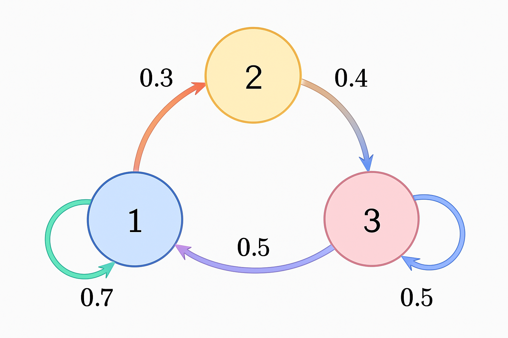

Deep Reinforcement Learning
Part 0: Orientation & Tooling
0.1 Welcome & Philosophy
Welcome to the Deep RL Omnibus!
This document is a living, comprehensive guide to Deep Reinforcement Learning, designed from the ground up for clarity, depth, and practical application. Unlike static textbooks, the Omnibus treats learning as an active process. Here, theory is not just described but visualized, and algorithms are not just presented but made transparent.
A Brief History of Reinforcement Learning
The ideas behind RL have a rich history, drawing from computer science, psychology, and control theory. Key milestones include Richard Bellman's work on dynamic programming in the 1950s, which gave us the foundational Bellman equations. This was followed by the development of model-free methods like TD-learning in the 1980s by Sutton and Barto. The modern era of Deep RL began in earnest with DeepMind's 2015 paper demonstrating a DQN agent that could master Atari games from raw pixels, culminating in breakthroughs like AlphaGo's defeat of the world's best Go player in 2016.
Deep Dive: A Visual History of RL Milestones
- First-Principles Thinking: We deconstruct complex algorithms into their core mathematical and intuitive components. You won't just learn what works, but why it works.
- Visual Intuition: Abstract concepts are made tangible through animated diagrams, interactive plots, and clear visualizations. We believe seeing a concept in action is as important as reading its definition.
- Progressive Disclosure: Information unfolds naturally. We start with high-level intuition, move to the formal mathematics, and then dive into implementation details, allowing you to learn at your preferred level of depth.
- Practicality First: While rigorously mathematical, our focus is on building practical understanding. All code is annotated with implementation notes, common pitfalls, and best practices.
Who This Is For & How to Navigate
This guide is crafted for a diverse audience. You can use the toggles in the header to filter content based on your learning goals. The main text follows the Practitioner Path, while collapsible blocks offer deeper dives for researchers or simplified explanations for beginners.
Crash Course in Probability & MDP Notation
A rigorous understanding of RL requires familiarity with the language of probability theory.
- Probability Space: An MDP is defined over a probability space $(\Omega, \mathcal{F}, P)$, where $\Omega$ is the set of all possible outcomes (e.g., all possible state-action-reward trajectories), $\mathcal{F}$ is a $\sigma$-algebra of events, and $P$ is a probability measure.
- Random Variables: Quantities like state $S_t$, action $A_t$, and reward $R_t$ are random variables mapping outcomes in $\Omega$ to real values.
- Conditional Independence: The Markov Property is a statement of conditional independence. We say random variable $X$ is conditionally independent of $Y$ given $Z$, written $X \perp Y | Z$, if $P(X|Y,Z) = P(X|Z)$. The Markov property for states is $S_{t+1} \perp \{S_0, \dots, S_{t-1}\} | S_t$. This means the current state $S_t$ is a sufficient statistic of the history.
- Hidden Markov Models (HMMs): A POMDP (Partially Observable MDP) can be viewed as an MDP where the true state is hidden, forming an HMM. The agent receives an observation $O_t$ that is probabilistically related to the true state $S_t$.
0.2 Interactive Environment
To bridge the gap between theory and practice, the code snippets in this guide are designed to be both readable and functional. While this document is static for security and performance, we provide one-click links to run the code in an interactive Google Colab environment.
Deep Dive: Advanced Tooling for Reproducible Research
For serious projects, moving beyond Colab to a robust local setup is crucial for reproducibility and performance.
- Dependency Management: Tools like Poetry or Conda manage complex dependencies and create isolated environments. Using a `conda-lock` or `poetry.lock` file ensures that anyone can replicate your exact package versions, which is critical as minor version changes in libraries like PyTorch or Gymnasium can alter agent behavior.
- Containerization: Docker provides the highest level of reproducibility. A `Dockerfile` can package your entire application—code, dependencies, system libraries, and even CUDA versions—into a portable container. This is the industry standard for deploying machine learning models.
- GPU Profiling: To debug performance bottlenecks, use profilers like NVIDIA's Nsight Systems or the built-in PyTorch Profiler. These tools can visualize exactly how much time is spent on data loading, GPU computation, and CPU overhead, helping you optimize your training loop.
Required Libraries
The Colab environments are configured with the complete scientific Python stack. The first cell in each notebook will handle the setup, which typically includes:
- PyTorch: The primary deep learning framework used.
- NumPy/SciPy: For numerical and scientific computing.
- Matplotlib/Seaborn: For generating visualizations.
- Gymnasium: The standard toolkit for reinforcement learning environments, a community-maintained fork of OpenAI's Gym.
# This code block would typically be the first cell in a Colab notebook.
# It handles the installation of required packages and sets up the environment.
# Install necessary libraries
!pip install -q torch numpy matplotlib gymnasium
# Import core libraries
import torch
import torch.nn as nn
import torch.optim as optim
import torch.nn.functional as F
import numpy as np
import matplotlib.pyplot as plt
import gymnasium as gym
import random
from collections import deque, namedtuple
# --- Environment Setup ---
print("🚀 Initializing environment...")
# Reproducibility
SEED = 42
random.seed(SEED)
np.random.seed(SEED)
torch.manual_seed(SEED)
if torch.cuda.is_available():
torch.cuda.manual_seed(SEED)
torch.backends.cudnn.deterministic = True
torch.backends.cudnn.benchmark = False
print("✅ Environment Initialized!")
print(f"PyTorch Version: {torch.__version__}")
print(f"NumPy Version: {np.__version__}")
print(f"Gymnasium Version: {gym.__version__}")
The tooling for RL is constantly evolving. How might future hardware, such as neuromorphic chips or quantum computers, change the way we design and train RL agents? How will the rise of foundation models and large-scale pre-training affect the need for specialized RL environments?
Test your understanding of the core concepts introduced in this section.
Micro-Quiz: The Markov Property
Which of the following scenarios best satisfies the Markov property from the agent's perspective?
- An agent playing poker where the state is only its own two cards.
- An agent playing chess where the state is the complete board position.
- An agent controlling a robot arm where the state is just the arm's end-effector position (but not its velocity).
Reveal Answer
Answer: 2. The complete chess board position contains all necessary information to determine the possible future moves and outcomes. How the pieces arrived at their current positions is irrelevant for future planning.
Why the others are wrong: In poker (1), the history of betting and folded cards (which are not part of the state) provides crucial information. For the robot arm (3), the velocity is needed to predict its future position, so position alone is not a Markov state.
Part 1: The Bedrock of Reinforcement Learning
1.1 The RL Paradigm: Learning from Interaction
At its most fundamental level, Reinforcement Learning (RL) is a computational approach to learning goal-directed behavior through interaction. It is a paradigm of learning from the consequences of actions, rather than from explicit instruction. It stands as one of the three primary pillars of machine learning, but its philosophy is distinct, focusing on an agent situated within an environment, learning to make optimal decisions over time to maximize a cumulative reward.
A Comparison of Machine Learning Paradigms
Imagine three ways a student might learn to play a video game:
- Supervised Learning: The student watches millions of hours of expert gameplay videos. Their goal is to mimic the expert's actions perfectly in any given situation. The data is labeled (situation -> correct action), and the feedback is immediate and direct ("You zigged, but the expert zagged."). This is learning by imitation.
- Real World Example: Training a Convolutional Neural Network (CNN) to classify images of cats and dogs from a labeled dataset.
- Unsupervised Learning: The student is given all the game's assets (character models, maps, sounds) and told to find interesting patterns. They might cluster characters into "heroes" and "villains" or identify that certain sounds often precede danger. They learn the structure of the game's world, but not how to act in it. This is learning by observation.
- Real World Example: Using k-means clustering to segment customers into different purchasing groups based on unlabeled sales data.
- Reinforcement Learning: The student is given a controller and put directly into the game. They aren't told what to do. They press buttons (actions), see the game change (next state), and watch their score go up or down (reward). Their goal is to figure out for themselves which sequence of actions leads to the highest final score. This is learning by trial, error, and evaluative feedback.
- Real World Example: Training an agent to play chess, where the only feedback is winning (+1) or losing (-1) at the end of the game.
The Agent-Environment Interaction Loop
The interaction between agent and environment is a continuous feedback loop. This loop is the fundamental data-generating process in all of RL. Let's break down a single step with precision:
The fundamental unit of data in RL is the experience tuple $(S_t, A_t, R_{t+1}, S_{t+1})$. This is what the agent's learning algorithm ingests.
- $S_t$: The state of the environment at the current time $t$.
- $A_t$: The action the agent chose to take in state $S_t$.
- $R_{t+1}$: The immediate reward received after taking action $A_t$.
- $S_{t+1}$: The new state the environment transitioned to as a result of action $A_t$.
The Temporal Credit Assignment Problem
The central challenge RL is designed to solve is the temporal credit assignment problem. If a sequence of a hundred actions in a chess game leads to a final victory, which of those actions were critical? A brilliant queen sacrifice on move 20 might be the true cause of a win on move 50, but the immediate feedback is negative (loss of a powerful piece). The goal is to properly attribute the final return, $G_t$, to the sequence of actions $(A_t, A_{t+1}, \dots)$ that produced it. Value functions, which we will see in Part 2, are the primary mechanism for solving this.
Key Challenges in Reinforcement Learning
While the interaction loop seems simple, several fundamental challenges make RL a difficult problem:
- The Exploration-Exploitation Trade-off: How does an agent balance exploiting its current knowledge to get high rewards with exploring the environment to possibly find even better strategies? We can formalize this with the concept of regret: the difference between the agent's total reward and the total reward it would have received if it had acted optimally from the start. Good exploration strategies aim to minimize this regret over time.
- The Curse of Dimensionality: Real-world problems have enormous state and action spaces. A game of Go has more states than atoms in the universe. This necessitates the use of function approximation, the core topic of Part 5.
- Reward Function Design: The entire behavior of the agent is driven by the reward signal. Designing a reward function that elicits the desired behavior without creating unintended loopholes (reward hacking) is a major practical challenge. A cleaning robot rewarded for "amount of dirt collected" might learn to dump its bin and re-collect the same dirt repeatedly.
- Sample Inefficiency: RL agents often require millions or billions of interactions with the environment to learn a good policy, a key motivation for developing more advanced, data-efficient algorithms.
Exploration Strategies: Multi-Armed Bandits
The exploration-exploitation trade-off can be studied in its purest form in the Multi-Armed Bandit problem. Here, an agent must choose between several slot machines ("arms") with unknown payout probabilities to maximize its total reward. The code below compares the simple $\epsilon$-greedy strategy with a more advanced method, the Upper Confidence Bound (UCB) algorithm, which makes more intelligent exploration decisions by balancing an arm's estimated value with its uncertainty.
import numpy as np
import matplotlib.pyplot as plt
class Bandit:
def __init__(self, n_arms=10):
self.n_arms = n_arms
self.true_means = np.random.normal(0, 1, n_arms)
self.optimal_arm = np.argmax(self.true_means)
self.optimal_value = np.max(self.true_means)
def pull(self, arm):
return np.random.normal(self.true_means[arm], 1)
def run_bandit_simulation(agent_class, n_steps=1000, n_runs=100, **kwargs):
all_rewards = np.zeros((n_runs, n_steps))
all_regrets = np.zeros((n_runs, n_steps))
for i in range(n_runs):
bandit = Bandit()
agent = agent_class(n_arms=bandit.n_arms, **kwargs)
for t in range(n_steps):
action = agent.select_action()
reward = bandit.pull(action)
agent.update(action, reward)
all_rewards[i, t] = reward
all_regrets[i, t] = bandit.optimal_value - reward
return np.mean(all_rewards, axis=0), np.mean(np.cumsum(all_regrets, axis=1), axis=0)
class EpsilonGreedyAgent:
def __init__(self, n_arms, epsilon=0.1):
self.n_arms = n_arms
self.epsilon = epsilon
self.estimates = np.zeros(n_arms)
self.counts = np.zeros(n_arms)
def select_action(self):
if np.random.random() < self.epsilon:
return np.random.randint(self.n_arms)
else:
return np.argmax(self.estimates)
def update(self, action, reward):
self.counts[action] += 1
self.estimates[action] += (1 / self.counts[action]) * (reward - self.estimates[action])
class UCBAgent:
def __init__(self, n_arms, c=2):
self.n_arms = n_arms
self.c = c
self.estimates = np.zeros(n_arms)
self.counts = np.zeros(n_arms)
self.t = 0
def select_action(self):
self.t += 1
# Play each arm once initially
if self.t <= self.n_arms:
return self.t - 1
# UCB calculation: Q(a) + c * sqrt(log(t) / N(a))
ucb_values = self.estimates + self.c * np.sqrt(np.log(self.t) / self.counts)
return np.argmax(ucb_values)
def update(self, action, reward):
self.counts[action] += 1
self.estimates[action] += (1 / self.counts[action]) * (reward - self.estimates[action])
# --- Run Simulations ---
avg_rewards_eps, regret_eps = run_bandit_simulation(EpsilonGreedyAgent, epsilon=0.1)
avg_rewards_ucb, regret_ucb = run_bandit_simulation(UCBAgent, c=2)
# --- Plotting ---
fig, (ax1, ax2) = plt.subplots(2, 1, figsize=(12, 10), sharex=True)
ax1.plot(np.cumsum(avg_rewards_eps) / np.arange(1, 1001), label="Epsilon-Greedy (ε=0.1)")
ax1.plot(np.cumsum(avg_rewards_ucb) / np.arange(1, 1001), label="UCB (c=2)")
ax1.set_ylabel("Average Reward")
ax1.set_title("Bandit Algorithm Performance (Averaged over 100 runs)")
ax1.legend()
ax2.plot(regret_eps, label="Epsilon-Greedy (ε=0.1)")
ax2.plot(regret_ucb, label="UCB (c=2)")
ax2.set_xlabel("Steps")
ax2.set_ylabel("Cumulative Regret")
ax2.set_title("Cumulative Regret vs. Time")
ax2.legend()
plt.show()
1.2 The Mathematical Framework: Markov Decision Processes (MDPs)
To move from the high-level paradigm to concrete algorithms, we must formalize the problem of sequential decision-making under uncertainty. The universal mathematical framework for this in reinforcement learning is the Markov Decision Process (MDP). An MDP provides a formal language to describe the interaction between a decision-making agent and its environment, grounded in the theory of probability.
1.2.1 The Markov Property: "The Future is Independent of the Past Given the Present"
The entire framework of MDPs hinges on a single, critical simplifying assumption: the Markov Property. A state signal $S_t$ is said to be Markov if and only if it contains all the information from the past that is relevant for predicting the future. Once the current state is known, the full history of how the agent arrived in that state can be discarded without losing any predictive power.
Mathematically, a state $S_t$ is Markov if the probability of the next state and reward is conditionally independent of the past history, given the current state and action. $$P(S_{t+1}=s', R_{t+1}=r | S_t, A_t) = P(S_{t+1}=s', R_{t+1}=r | S_t, A_t, R_t, S_{t-1}, A_{t-1}, \dots, S_0, A_0)$$ Let's unpack this:
- Left Side: $P(S_{t+1}=s', R_{t+1}=r | S_t, A_t)$
This is the probability of transitioning to a specific next state $s'$ and receiving reward $r$, given that you are currently in state $S_t$ and take action $A_t$. It depends only on the present. - Right Side: $P(\dots | S_t, A_t, R_t, S_{t-1}, \dots)$
This is the probability of the same event, but given the entire history of states, actions, and rewards.
It is a common misconception to think of the Markov property as a property of the environment. In reality, almost no real-world environment is truly Markovian. The Markov property is a feature of the state representation that we, as designers, provide to the agent. The core challenge of state design is to craft a representation $S_t$ that is a sufficient statistic of the history, thereby making the problem Markovian from the agent's perspective.
- Good Representation (Chess): The current board position is a Markov state. It perfectly captures everything needed to play optimally. How the pieces got to their current squares is irrelevant for future planning.
- Bad Representation (Driving): If the state is only the car's position, it's not Markov. To predict the future position, you also need to know the car's current velocity and acceleration. A proper Markov state for a car would be a vector like $[position, velocity, acceleration]$.
- Deep RL Solution: For complex tasks like Atari games, a single frame is not Markov (you can't tell a ball's velocity). DeepMind's solution was to stack the last 4 frames together to form the state, allowing the network to infer dynamics.
1.2.2 Beyond Markov: Partially Observable MDPs (POMDPs)
What happens when the agent cannot observe the full state? This is known as partial observability, and it is the norm in the real world. Such problems are modeled as Partially Observable Markov Decision Processes (POMDPs). In a POMDP, the agent maintains a belief state, $b(s_t)$, which is a probability distribution over all possible environment states, conditioned on its history of actions and observations. This belief state is updated using Bayesian filtering. The key insight is that this belief state is Markovian, allowing the problem to be reformulated as a (much harder) MDP over the space of beliefs.
1.3 The MDP Tuple: (S, A, P, R, γ) - A Rigorous Unpacking
An MDP is formally defined by a 5-element tuple. Mastering these components is essential to understanding any RL algorithm. Let's make this concrete with a simple Grid World example: a 3x4 grid where an agent (🤖) tries to reach a goal (🏆) while avoiding a pitfall (🔥). There's also a wall (🧱) the agent cannot pass through.
| Component | Symbol | Description | Grid World Example |
|---|---|---|---|
| State Space | $S$ | The set of all possible states the agent can be in. Must be Markov. | The set of all non-wall grid coordinates: $S = \{(0,0), \dots, (2,3)\} \setminus \{(1,1)\}$. $|S|=11$. |
| Action Space | $A$ | The set of all possible actions the agent can take. Can be discrete or continuous. | $A = \{\text{up, down, left, right}\}$. $|A|=4$. |
| Transition Model | $P(s' | s, a)$ | The probability of transitioning to state $s'$ after taking action $a$ in state $s$. Defines the environment's dynamics. | If the world is "slippery", from $s=(0,1)$ taking $a=\text{right}$: $P((0,2)|s,a)=0.8$ (intended), $P((0,0)|s,a)=0.1$ (slip left), $P((1,1)-\text{wall}|s,a)=0.1$ (slip down). Agent stays at (0,1). |
| Reward Function | $R(s, a, s')$ | The immediate scalar reward for a transition. Defines the agent's goal. | $R = +1$ for entering the goal 🏆. $R = -1$ for entering the pitfall 🔥. $R = -0.04$ for all other moves (a small cost for time to encourage efficiency). |
| Discount Factor | $\gamma$ | A value between $[0, 1)$ that determines the present value of future rewards. A key lever for controlling agent myopia. | $\gamma = 0.99$. A reward of 1 in 10 steps is worth $1 \times 0.99^9 \approx 0.91$. This makes the agent prefer shorter paths. If $\gamma=0$, the agent is myopic and only cares about the immediate reward. |
For any finite Markov Decision Process, a foundational theorem in dynamic programming gives us confidence that our search is not futile:
There exists at least one policy $\pi^*$ that is optimal, meaning it achieves the highest possible value from every state, $V^*(s) \ge V^\pi(s)$ for all $s \in S$ and all policies $\pi$.
Furthermore, at least one of these optimal policies is guaranteed to be deterministic. The proof relies on showing that the Bellman optimality operator is a contraction mapping, which guarantees a unique fixed point (the optimal value function), from which an optimal policy can be derived.
Part 2: The Objective: Policies, Returns, and Value Functions
2.1 The Return (G_t): Defining the Goal
Now that we have established the MDP as our mathematical playground, we can precisely define what the agent is trying to achieve. The agent's goal is not merely to get a high reward on the next step, but to select actions that will lead to the greatest possible cumulative reward over its lifetime. This long-term objective is formalized as the Return.
Episodic vs. Continuing Tasks
Before defining the return, we must distinguish between two fundamental types of tasks in RL:
- Episodic Tasks: These tasks have a natural end point, called a terminal state. Each run of the task, from a start state to a terminal state, is called an "episode." For these tasks, the sequence of rewards is finite.
- Continuing Tasks: These tasks have no terminal state and could, in principle, go on forever. For these tasks, the simple sum of rewards could diverge to infinity. The discount factor, $\gamma$, becomes mathematically essential to ensure the return is a finite, well-defined quantity that our algorithms can optimize.
Defining the Discounted Return
The Return at time $t$, denoted $G_t$, is the total discounted reward from time $t$ onward. It's defined as the sum of all future rewards, each discounted by how far in the future it is received.
$$G_t \doteq R_{t+1} + \gamma R_{t+2} + \gamma^2 R_{t+3} + \dots = \sum_{k=0}^{\infty} \gamma^k R_{t+k+1}$$Let's dissect the equation for the return, $G_t = \sum_{k=0}^{\infty} \gamma^k R_{t+k+1}$:
- $G_t$: This is the Return, the quantity we want to maximize. It represents the total value of all future rewards as seen from time step $t$.
- $\sum_{k=0}^{\infty}$: This is a sum over all future time steps, starting from the immediate next step ($k=0$) and going on forever.
- $R_{t+k+1}$: This is the reward received at the future time step $t+k+1$. When $k=0$, it's the immediate reward $R_{t+1}$. When $k=1$, it's the reward at $t+2$, and so on.
- $\gamma^k$: This is the discount factor $\gamma$ raised to the power of $k$. Since $\gamma$ is between 0 and 1, this term gets smaller as $k$ gets larger. It's what makes rewards further in the future less valuable than immediate rewards.
The discount factor $\gamma \in [0, 1)$ has two key interpretations:
- Economic Analogy (Time Value of Money): A dollar today is worth more than a dollar tomorrow. Similarly, a reward received now is more valuable than the same reward received in the future. $\gamma$ acts like an interest rate, controlling this preference. A smaller $\gamma$ (e.g., 0.9) makes the agent "impatient" or myopic, while a larger $\gamma$ (e.g., 0.999) makes it more "patient" and farsighted.
- Mathematical Convenience: It ensures that for continuing tasks, the infinite sum of rewards converges to a finite value as long as the rewards are bounded. Without it, the return could be infinite, making it impossible to compare different strategies.
The definition of the return has a powerful recursive property that is the foundation of the Bellman equations we will see in Part 3. We can express the return at time $t$ in terms of the return at time $t+1$:
$$G_t = R_{t+1} + \gamma R_{t+2} + \gamma^2 R_{t+3} + \dots$$ $$G_t = R_{t+1} + \gamma(R_{t+2} + \gamma R_{t+3} + \dots)$$ $$G_t = R_{t+1} + \gamma G_{t+1}$$This simple relationship is profound. It shows that the total future reward is simply the immediate reward plus the discounted total future reward from the next state. This allows us to break a large, complex problem into smaller, self-similar subproblems, which is the core idea of dynamic programming.
Visualizing the Discount Factor
The code below calculates the discounted return for each step in a trajectory and visualizes how the present value of a future reward decays based on different values of $\gamma$.
import numpy as np
import matplotlib.pyplot as plt
def calculate_returns_from_trajectory(rewards: list[float], gamma: float) -> np.ndarray:
"""
Calculates the discounted return G_t for each time step t in a trajectory.
"""
returns = np.zeros_like(rewards, dtype=float)
future_return = 0.0
for t in reversed(range(len(rewards))):
future_return = rewards[t] + gamma * future_return
returns[t] = future_return
return returns
# --- Visualize the effect of the discount factor ---
fig, ax = plt.subplots(figsize=(10, 6))
future_reward = 100
steps_in_future = np.arange(1, 21)
gammas = [0.8, 0.9, 0.95, 0.99, 1.0]
for gamma in gammas:
present_values = future_reward * (gamma ** (steps_in_future - 1))
label = f'γ = {gamma}'
if gamma == 1.0:
label += ' (undiscounted)'
ax.plot(steps_in_future, present_values, 'o-', label=label)
ax.set_title("Present Value of a Future Reward of 100")
ax.set_xlabel("Steps into the Future")
ax.set_ylabel("Present Value")
ax.legend()
ax.grid(True, alpha=0.3)
plt.show()
# --- Example Calculation ---
rewards = [-1, -1, -1, 10]
gamma = 0.99
returns = calculate_returns_from_trajectory(rewards, gamma)
print("\n=== Return Calculation Example ===")
print(f"Rewards: {rewards}")
print(f"Gamma: {gamma}")
print(f"Returns (G_t): {[f'{r:.2f}' for r in returns]}")
2.2 The Policy (π): The Agent's "Brain"
The agent's behavior—its decision-making process—is defined by its policy, denoted by the Greek letter $\pi$. A policy is a mapping from states to a selection of actions. It is the core of the RL agent, representing its strategy at a given moment.
Policies can be categorized into two types:
- Deterministic Policy: For any given state, a deterministic policy always outputs the same action. It is a direct mapping: $a = \pi(s)$. This is like a chess engine that, given the same board, will always make the same move.
- Stochastic Policy: A stochastic policy outputs a probability distribution over the set of available actions for a given state: $\pi(a|s) \doteq P(A_t = a | S_t = s)$. This is like a rock-paper-scissors player who plays rock 40% of the time, paper 30%, and scissors 30%. A deterministic strategy in that game would be easily beaten. Stochastic policies are crucial for exploration and for finding optimal solutions in partially observable environments.
The ultimate objective of a Reinforcement Learning agent is to find an optimal policy, denoted $\pi^*$. An optimal policy is one that achieves the highest possible expected return from any starting state.
Representing a Policy
How do we store a policy in code? The representation depends on the complexity of the problem.
- Tabular Policies: For small, discrete state spaces, a policy can be a simple lookup table (e.g., a dictionary or an array). This is simple and exact but fails completely when the number of states is large.
- Parameterized Policies: For large or continuous state spaces, storing a table is impossible. Instead, we use a function approximator with parameters $\theta$, written as $\pi_\theta(a|s)$. This function takes a state as input and outputs the action (or action probabilities). In Deep RL, this is typically a neural network. The key advantage is generalization: the network can learn a sensible policy for states it has never seen before based on their features.
2.3 Value Functions: Judging the Future
A policy tells the agent how to act. But to improve its policy, the agent needs a way to evaluate it. This is the role of value functions. Value functions are state-dependent (or state-action dependent) functions that estimate the expected return, providing a quantitative measure of "how good" a situation is.
State-Value Function ($V^\pi(s)$)
The state-value function, $V^\pi(s)$, answers the question: "What is the expected total future reward I will get if I am in state $s$ and follow my policy $\pi$ from this point onward?"
It is formally defined as the expected return, given that the agent starts in state $s$ and follows policy $\pi$:
$$V^\pi(s) \doteq \mathbb{E}_\pi [G_t | S_t = s] = \mathbb{E}_\pi \left[ \sum_{k=0}^{\infty} \gamma^k R_{t+k+1} \middle| S_t = s \right]$$The expectation $\mathbb{E}_\pi[\cdot]$ averages over all possible random trajectories that can unfold, due to both the agent's stochastic policy and the environment's stochastic dynamics.
Action-Value Function ($Q^\pi(s, a)$)
The action-value function, $Q^\pi(s, a)$, answers a slightly more specific question: "What is the expected total future reward I will get if I am in state $s$, I decide to take action $a$, and then follow my policy $\pi$ from that point onward?"
It is formally defined as the expected return after taking action $a$ in state $s$ and subsequently following policy $\pi$:
$$Q^\pi(s, a) \doteq \mathbb{E}_\pi [G_t | S_t = s, A_t = a] = \mathbb{E}_\pi \left[ \sum_{k=0}^{\infty} \gamma^k R_{t+k+1} \middle| S_t = s, A_t = a \right]$$It might seem redundant to have two types of value functions, but they serve different purposes, especially when the agent doesn't have a model of the environment's dynamics ($P$ and $R$). This is known as model-free learning.
- The State-Value Function $V(s)$ tells you the long-term value of being in a state. It's great for analysis, but to act on it, you need a model. To choose an action, you'd have to perform a one-step lookahead for every possible action $a$, calculate $\sum_{s'} P(s'|s,a) [R(s,a,s') + \gamma V(s')]$, and then pick the action that gives the best result. This requires knowing the transition probabilities $P$ and rewards $R$.
- The Action-Value Function $Q(s, a)$ tells you the long-term value of taking a specific action in a specific state. This is much more direct for control. To choose the best action, you simply find the action with the highest Q-value: $\arg\max_a Q(s, a)$. You don't need to know anything about the environment's dynamics to make an optimal decision. This is why model-free algorithms like Q-Learning learn Q-values directly. They implicitly contain all the information needed for action selection.
Visualizing Value Functions
Let's visualize how value functions might look for our Grid World example. High values should appear near the goal, and low values near the pitfall. A good policy will have values that smoothly guide the agent from the start to the goal. The code below computes the value function for a given (suboptimal) policy.
import numpy as np
import matplotlib.pyplot as plt
import seaborn as sns
# This code uses the GridWorld class defined in Part 3.
# A simplified version is included here for this self-contained example.
class SimpleGridWorld:
def __init__(self):
self.shape = (3, 4)
self.n_states = 12
self.goal_state, self.pit_state, self.wall_state = 3, 7, 5
self.terminal_states = [self.goal_state, self.pit_state]
def step(self, s, a):
# Simplified deterministic transitions for this example
row, col = divmod(s, 4)
if a == 0 and row > 0: next_s = s - 4
elif a == 1 and row < 2: next_s = s + 4
elif a == 2 and col > 0: next_s = s - 1
elif a == 3 and col < 3: next_s = s + 1
else: next_s = s
if next_s == self.wall_state: next_s = s
reward = -0.04
if next_s == self.goal_state: reward = 1.0
if next_s == self.pit_state: reward = -1.0
return next_s, reward
def compute_value_function_for_policy(env, policy, gamma=0.99, theta=1e-6):
V = np.zeros(env.n_states)
while True:
delta = 0
for s in range(env.n_states):
if s in env.terminal_states or s == env.wall_state: continue
v_old = V[s]
action = policy[s]
next_s, reward = env.step(s, action)
V[s] = reward + gamma * V[next_s]
delta = max(delta, abs(v_old - V[s]))
if delta < theta: break
V[env.wall_state] = np.nan
return V.reshape(env.shape)
# Policy 1: A purely random policy
random_policy = np.random.randint(0, 4, size=12)
# Policy 2: A somewhat smarter policy (tends to move right and towards goal)
smart_policy = np.array([3, 3, 3, 0, 0, 0, 3, 0, 0, 3, 3, 0])
env = SimpleGridWorld()
random_values = compute_value_function_for_policy(env, random_policy)
smart_values = compute_value_function_for_policy(env, smart_policy)
# Visualize the two value functions side-by-side
fig, (ax1, ax2) = plt.subplots(1, 2, figsize=(14, 6))
sns.heatmap(random_values, annot=True, fmt=".2f", cmap="viridis", cbar=False, ax=ax1, linewidths=.5)
ax1.set_title("Value Function of a Random Policy")
sns.heatmap(smart_values, annot=True, fmt=".2f", cmap="viridis", cbar=False, ax=ax2, linewidths=.5)
ax2.set_title("Value Function of a 'Smarter' Policy")
fig.tight_layout()
plt.show()
Part 3: The Bellman Equations: Unpacking the Recursion
3.1 The Bellman Expectation Equation: What a Policy is Worth
The value functions we have defined possess a beautiful, recursive structure. This structure was formalized by the American mathematician Richard Bellman in the 1950s, and the resulting equations are the absolute cornerstone of most reinforcement learning algorithms. The Bellman Equations express a fundamental relationship between the value of a state and the values of its successor states. They decompose the value of a state (a long-term measure) into the sum of the immediate reward and the discounted value of the next state, providing a framework for both evaluation and optimization in RL.
Derivation for the State-Value Function $V^\pi(s)$
The derivation links the definition of $V^\pi(s)$ with the recursive nature of the return $G_t$ that we established in Part 2. It's a straightforward but powerful sequence of substitutions that reveals the self-consistent nature of value functions under a policy.
- Start with the definition of the value function: $$V^\pi(s) \doteq \mathbb{E}_\pi [G_t | S_t = s]$$
- Substitute the recursive definition of the return, $G_t = R_{t+1} + \gamma G_{t+1}$: $$V^\pi(s) = \mathbb{E}_\pi [R_{t+1} + \gamma G_{t+1} | S_t = s]$$
- Use the linearity of expectation, which allows us to split the expectation of a sum into a sum of expectations: $$V^\pi(s) = \mathbb{E}_\pi [R_{t+1} | S_t = s] + \gamma \mathbb{E}_\pi [G_{t+1} | S_t = s]$$
- Recognize that the second term, $\mathbb{E}_\pi [G_{t+1} | S_t = s]$, is just the expected value of the *next* state, $V^\pi(S_{t+1})$. This brings us to the final, compact form of the Bellman Expectation Equation:
To make this computationally concrete for an environment with known dynamics, we expand the expectation over all possibilities dictated by the policy $\pi$ and the environment's transition model $P$.
$$V^\pi(s) = \sum_{a \in A} \pi(a|s) \sum_{s', r} p(s', r | s, a) \left( r + \gamma V^\pi(s') \right)$$The equation tells us that the value of a state under a policy is the expected immediate reward plus the discounted expected value of whatever state we land in next, averaged over the actions the policy chooses and the environment's stochastic outcomes. It’s a recursive breakdown that turns a long-term problem into a series of one-step problems.
Derivation for the Action-Value Function $Q^\pi(s,a)$
Similarly, for $Q^\pi(s,a)$, the value of taking action $a$ in state $s$ under policy $\pi$, we derive:
$$Q^\pi(s,a) = \mathbb{E}_\pi [R_{t+1} + \gamma Q^\pi(S_{t+1}, A_{t+1}) | S_t = s, A_t = a]$$Expanding with environment dynamics:
$$Q^\pi(s,a) = \sum_{s', r} p(s', r | s, a) \left( r + \gamma \sum_{a'} \pi(a'|s') Q^\pi(s', a') \right)$$This connects immediate rewards to future action-values under the policy, crucial for methods like SARSA.
Iterative Policy Evaluation
The Bellman expectation equation provides a system of equations, one for each state. For small state spaces, we could solve this system directly via matrix inversion (V = (I - γPπ)^(-1)R). However, a more general and computationally scalable approach is an iterative method called Iterative Policy Evaluation. We start with arbitrary value estimates (e.g., all zeros) and repeatedly sweep through the state space, applying the Bellman update to each state until the values converge. Convergence is guaranteed as the Bellman operator is a contraction mapping with factor γ < 1.
Proof of Convergence for Policy Evaluation
The update $V_{k+1}(s) = \sum_a \pi(a|s) \sum_{s',r} p(s',r|s,a)[r + \gamma V_k(s')]$ defines an operator Tπ(V) = Rπ + γPπV. Since ||Tπ(V1) - Tπ(V2)||_∞ ≤ γ||V1 - V2||_∞, Tπ is a contraction in the sup norm with modulus γ < 1. By the Banach fixed-point theorem, iteration converges to the unique solution Vπ at rate O(γ^k).
import numpy as np
import matplotlib.pyplot as plt
# A simple GridWorld Environment for demonstration
class GridWorld:
def __init__(self):
self.shape = (3, 4)
self.n_states = self.shape[0] * self.shape[1]
self.goal_state = 3
self.pit_state = 7
self.wall_state = 5
self.bad_states = [self.goal_state, self.pit_state, self.wall_state]
self.n_actions = 4 # 0:Up, 1:Down, 2:Left, 3:Right
def step(self, s, a):
# Simplified deterministic transitions
row, col = divmod(s, self.shape[1])
if a == 0: row = max(0, row - 1)
elif a == 1: row = min(self.shape[0] - 1, row + 1)
elif a == 2: col = max(0, col - 1)
elif a == 3: col = min(self.shape[1] - 1, col + 1)
next_s = row * self.shape[1] + col
if next_s == self.wall_state:
next_s = s # Bump into wall
# Define rewards
if next_s == self.goal_state: reward = 1.0
elif next_s == self.pit_state: reward = -1.0
else: reward = -0.04
return next_s, reward
def policy_evaluation(env, policy, gamma=0.99, theta=1e-6):
"""Evaluate a policy using iterative Bellman expectation updates."""
V = np.zeros(env.n_states)
deltas = []
while True:
delta = 0
for s in range(env.n_states):
if s in env.bad_states: continue
v_old = V[s]
action = policy[s]
next_s, reward = env.step(s, action)
# Bellman Expectation Update
V[s] = reward + gamma * V[next_s]
delta = max(delta, abs(v_old - V[s]))
deltas.append(delta)
if delta < theta:
break
return V, deltas
# Define a simple policy: Go right if possible, otherwise up.
policy = np.full(12, 3, dtype=int) # Default to right
policy[[3, 7, 11]] = 0 # From right edge, go up
env = GridWorld()
values, deltas = policy_evaluation(env, policy)
# Visualize convergence and value function
fig, (ax1, ax2) = plt.subplots(1, 2, figsize=(14, 5))
ax1.set_title("Policy Evaluation Convergence")
ax1.plot(deltas)
ax1.set_xlabel('Iteration')
ax1.set_ylabel('Max Value Change (Δ)')
ax1.set_yscale('log')
ax1.grid(True, alpha=0.3)
# Value heatmap
V_grid = values.reshape(env.shape)
cax = ax2.imshow(V_grid, cmap='viridis_r')
ax2.set_title("Value Function Under Policy")
fig.colorbar(cax, ax=ax2, label='Value')
for s in range(env.n_states):
row, col = divmod(s, env.shape[1])
ax2.text(col, row, f"{values[s]:.2f}", ha='center', va='center', color='white' if values[s] < 0.5 else 'black')
plt.tight_layout()
plt.show()
3.2 The Bellman Optimality Equation: Finding the Best Possible Value
The expectation equations are for evaluation. But our goal is to find the best policy. The Bellman Optimality Equation describes the value of the optimal policy, $\pi^*$. It is a statement about the condition that the value function for an optimal policy must satisfy, forming the basis for algorithms seeking to maximize return.
The key difference from the expectation equation is the introduction of a $\max$ operator. An optimal policy must act greedily with respect to the optimal value function. Instead of averaging over a policy's actions, we simply choose the best one, reflecting a deterministic choice at each state for maximal long-term reward.
Optimal Value Functions $V^*(s)$ and $Q^*(s,a)$
The value of a state under an optimal policy, $V^*(s)$, must be equal to the expected return of taking the single best possible action from that state.
$$V^*(s) = \max_{a \in A} Q^*(s, a)$$By substituting the expression for $Q^*$, we get the Bellman Optimality Equation for $V^*$:
$$V^*(s) = \max_{a} \mathbb{E}[R_{t+1} + \gamma V^*(S_{t+1}) | S_t=s, A_t=a]$$Expanding with environment dynamics:
$$V^*(s) = \max_{a} \sum_{s', r} p(s', r | s, a) \left( r + \gamma V^*(s') \right)$$The optimality equation for $Q^*$ is even more important for model-free learning. It states that the optimal value of taking action $a$ in state $s$ is the immediate reward plus the discounted value of the best possible action from the next state.
$$Q^*(s, a) = \mathbb{E}[R_{t+1} + \gamma \max_{a'} Q^*(S_{t+1}, a') | S_t=s, A_t=a]$$Or explicitly:
$$Q^*(s, a) = \sum_{s', r} p(s', r | s, a) \left( r + \gamma \max_{a'} Q^*(s', a') \right)$$This equation is the foundation of the famous Q-learning algorithm, which we'll explore in the next sections.
The $\max$ operator makes the optimality equation non-linear, unlike the linear system in policy evaluation. This non-linearity prevents direct matrix solutions and necessitates iterative methods or approximations, especially in large or continuous state spaces.
Value Iteration
The Bellman optimality equation gives us a straightforward algorithm for finding the optimal policy, known as Value Iteration. It is similar to policy evaluation, but instead of applying a policy-specific backup, we apply the optimality backup at each step, maximizing over actions. Convergence to $V^*$ is guaranteed for γ < 1, as the max operator combined with discounting forms a contraction.
Proof of Convergence for Value Iteration
The optimality operator T*(V) = max_a [R_a + γP_a V] is a contraction: ||T*(V1) - T*(V2)||_∞ ≤ γ||V1 - V2||_∞, since max preserves the bound. By Banach's theorem, iteration converges to $V^*$, and the greedy policy π(s) = argmax_a Q^*(s,a) is optimal.
def value_iteration(env, gamma=0.99, theta=1e-6):
"""Solve MDP using value iteration (Bellman optimality)."""
V = np.zeros(env.n_states)
deltas = []
while True:
delta = 0
for s in range(env.n_states):
if s in env.bad_states: continue
v_old = V[s]
action_values = np.zeros(env.n_actions)
for a in range(env.n_actions):
next_s, reward = env.step(s, a)
action_values[a] = reward + gamma * V[next_s]
# Bellman Optimality Update
V[s] = np.max(action_values)
delta = max(delta, abs(v_old - V[s]))
deltas.append(delta)
if delta < theta:
break
# Extract optimal policy
policy = np.zeros(env.n_states, dtype=int)
for s in range(env.n_states):
if s in env.bad_states: continue
action_values = np.zeros(env.n_actions)
for a in range(env.n_actions):
next_s, reward = env.step(s, a)
action_values[a] = reward + gamma * V[next_s]
policy[s] = np.argmax(action_values)
return V, policy, deltas
env = GridWorld()
V_star, policy_star, deltas = value_iteration(env)
# Visualize convergence and final policy
fig, (ax1, ax2) = plt.subplots(1, 2, figsize=(14, 6))
# Convergence plot
ax1.plot(deltas)
ax1.set_xlabel('Iteration')
ax1.set_ylabel('Max Value Change (Δ)')
ax1.set_title('Value Iteration Convergence')
ax1.set_yscale('log')
ax1.grid(True, alpha=0.3)
# Policy plot
V_grid = V_star.reshape(env.shape)
cax = ax2.imshow(V_grid, cmap='viridis_r')
ax2.set_title('Optimal Policy (Arrows) & Value Function (Colors)')
fig.colorbar(cax, ax=ax2, label='Value')
arrows = ['↑', '↓', '←', '→']
for s in range(env.n_states):
if s in env.bad_states: continue
row, col = divmod(s, env.shape[1])
ax2.text(col, row, arrows[policy_star[s]],
ha='center', va='center', color='white' if V_star[s] < 0.5 else 'black', fontsize=18, weight='bold')
plt.tight_layout()
plt.show()
3.3 Connections and Implications
The Bellman equations unify evaluation and optimization, linking policy assessment (expectation) to improvement (optimality). They underpin dynamic programming (exact solutions), temporal difference learning (sample-based updates), and deep RL approximations (function approximation in Part 5).
| Equation | Purpose | Key Operation | Algorithms |
|---|---|---|---|
| Expectation ($V^\pi$) | Evaluate policy | Average over π | Policy Evaluation, SARSA |
| Optimality ($V^*$) | Find best policy | Max over actions | Value Iteration, Q-Learning |
Implications include computational challenges: expectation is linear but optimality’s max introduces non-linearity, critical for stability issues in deep RL (see Part 6’s Deadly Triad).
3.4 Limitations and Open Questions
- Scalability: Bellman updates require full state sweeps, infeasible for large/continuous spaces. How can sampling or approximation scale this?
- Partial Observability: Equations assume full state visibility (MDP). What modifications handle POMDPs with hidden states?
- Non-Stationarity: Dynamics assume fixed P(s',r|s,a). How to adapt to changing environments?
Part 4: The Core Dilemma: Exploration vs. Exploitation
4.1 The Multi-Armed Bandit: A Pure Exploration Problem
We have established that an agent's goal is to find an optimal policy $\pi^*$ by learning an optimal value function, $Q^*$, and then acting greedily with respect to it. However, a critical problem emerges during the learning process itself: how can the agent learn the true optimal value function if it only ever follows its current best guess? This creates the most fundamental trade-off in online decision-making: the exploration versus exploitation dilemma.
Historical Context and Origins
The roots of this problem are deep, originating from statistical decision theory. The problem gained prominence during World War II, where Allied scientists, including Alan Turing, used similar sequential analysis techniques for code-breaking. It was also conceptually similar to challenges in adaptive clinical trials, where doctors needed to decide which of several experimental treatments to administer to patients. The goal was to quickly identify the best treatment (exploit) while still gathering data on the others (explore) to ensure the conclusion was statistically sound. The problem was formally defined as the "multi-armed bandit problem" by Herbert Robbins in his seminal 1952 paper, which laid the mathematical groundwork for decades of research. Today, these principles are the backbone of A/B testing platforms at companies like Google and Netflix.
Imagine your restaurant choices have rewards drawn from Gaussian distributions.
- Restaurant A (Exploit): Your favorite. Reliable, with a known reward distribution of $\mathcal{N}(8, 1)$.
- Restaurant B (Explore): A new place. Its true reward distribution is $\mathcal{N}(10, 9)$—a high average but with high variance, meaning it could be amazing or terrible. You don't know this.
Mathematical Formulation
The purest distillation of this dilemma is the k-armed bandit problem. It's a simplified RL problem with only one state. At each time step $t=1, 2, \dots, T$, an agent chooses an action (or "arm") $A_t$ from $k$ possibilities and receives a reward $R_t$. The value of an action $a$ is its expected reward: $q_*(a) = \mathbb{E}[R_t | A_t = a]$. The agent's goal is to find a policy that maximizes the cumulative reward $\sum_{t=1}^T R_t$.
The agent maintains an estimate $Q_t(a)$ for each action's value. A common way to update this estimate after receiving reward $r_t$ for action $a$ is via an incremental update rule:
$$Q_{t+1}(a) = Q_t(a) + \alpha_t (r_t - Q_t(a))$$The **step-size parameter** $\alpha_t$ determines how much new information overrides old. For stationary problems (where $q_*(a)$ is constant), using a sample-average step-size $\alpha_t = 1/N_t(a)$ guarantees convergence. For **non-stationary bandits**, where reward distributions change over time (e.g., ad click-through rates changing with trends), a constant step-size $\alpha \in (0, 1]$ is preferred. This gives more weight to recent rewards, allowing the agent to "forget" outdated information.
Limitations and Extensions: Contextual Bandits
The simple bandit problem assumes that the arms are independent and the best choice is always the same. This is often not true. For instance, in a recommendation system, the best movie to recommend depends on the user. This gives rise to the contextual bandit problem, where at each step, the agent first observes a context (or state) $s_t$ before choosing an action. The goal is then to learn a policy $\pi(a|s)$ that maximizes reward. This is a crucial bridge between simple bandits and full reinforcement learning.
4.2 Regret Analysis: Quantifying Performance
How do we measure how well an exploration strategy performs? The key metric is regret. The total regret after $T$ steps is the cumulative opportunity loss—the difference between the total reward of an optimal strategy and the agent's total reward.
Let $q_*(a^*) = \max_a q_*(a)$ be the value of the truly optimal action $a^*$. The total or cumulative regret is:
$$L_T = \sum_{t=1}^T (q_*(a^*) - q_*(A_t))$$The goal of a good exploration strategy is to have sub-linear total regret, meaning that the average regret per step, $L_T/T$, approaches zero as $T \to \infty$. This indicates the agent is successfully converging on the optimal action.
| Strategy | Regret Bound | Description |
|---|---|---|
| Greedy | $O(T)$ | Linear. Can get stuck on a suboptimal arm forever. |
| ε-Greedy | $O(k \log T)$ | Sub-linear. Guaranteed to converge but explores inefficiently. |
| UCB1 | $O(k \log T)$ | Logarithmic. Near-optimal regret by balancing value with uncertainty. |
| Thompson Sampling | $O(\sqrt{kT \log k})$ | Square-root. Bayesian approach, often empirically the best. |
| EXP3 (Adversarial) | $O(\sqrt{T k \log k})$ | Square-root. For non-stationary or adversarial reward settings. |
These bounds show that principled exploration strategies grow their regret far more slowly than simpler methods. For example, in online advertising, minimizing regret means minimizing the number of times a less effective ad is shown, directly translating to higher revenue.
4.3 Strategy 1: The ε-Greedy Strategy
The $\epsilon$-greedy policy is the simplest and most common baseline. It is defined by a single hyperparameter, $\epsilon \in [0, 1]$:
- With probability $1 - \epsilon$, the agent exploits: it chooses the action with the highest estimated Q-value, $a_t = \arg\max_a Q_t(a)$.
- With probability $\epsilon$, the agent explores: it chooses an action uniformly at random from the set of all available actions.
Inefficiencies and Variants
The uniform nature of ε-greedy's exploration is its main weakness. A common practical improvement is to anneal or decay $\epsilon$ over time. The agent starts with a high $\epsilon$ (e.g., $\epsilon=1.0$) and gradually decreases it. Another variant is **ε-first**, which has a pure exploration phase for $N$ steps followed by pure exploitation.
Imagine a 1000-arm bandit where only one arm gives a reward of +1 and all others give 0. With ε=0.1, the agent will spend 90% of its time pulling what it initially thinks is the best arm (which is likely a 0-reward arm). It explores randomly only 10% of the time, so the expected number of pulls to find the single good arm is very high. More directed exploration strategies are needed here.
4.4 Strategy 2: Upper-Confidence-Bound (UCB) Action Selection
The UCB family of algorithms provides a more intelligent exploration strategy based on the principle of "optimism in the face of uncertainty." It selects an action using the following formula:
$$A_t = \arg\max_{a \in A} \left[ Q_t(a) + c \sqrt{\frac{\ln t}{N_t(a)}} \right]$$The second term is the uncertainty bonus. If an action has been tried very few times ($N_t(a)$ is small), the bonus is large, encouraging exploration. As $N_t(a)$ grows, the bonus shrinks, and the selection becomes dominated by the known value $Q_t(a)$.
Derivation Sketch of UCB's Regret Bound
The logarithmic regret bound for UCB is derived from concentration inequalities. For rewards bounded in $[0, 1]$, Hoeffding's Inequality states that the probability of the empirical mean $\hat{\mu}$ of $n$ samples deviating from the true mean $\mu$ by more than $\epsilon$ is bounded:
$$P(|\hat{\mu} - \mu| \ge \epsilon) \le 2e^{-2n\epsilon^2}$$By setting the right side to a small probability $p$ and solving for $\epsilon$, we find that with probability $1-p$, the true mean is bounded by $\mu \le \hat{\mu} + \sqrt{\frac{\ln(2/p)}{2n}}$. The UCB bonus term $\sqrt{\frac{c \ln t}{N_t(a)}}$ is derived from this form by setting $p = 1/t^x$ for some $x$, ensuring that the probability of our bound being wrong decreases polynomially with time. This guarantees that we don't overestimate indefinitely and that the number of times a suboptimal arm is pulled is bounded logarithmically.
UCB Variants and Limitations
- KL-UCB: Uses the Kullback-Leibler (KL) divergence to create tighter, distribution-aware confidence bounds for non-Gaussian rewards.
- Discounted UCB: For non-stationary bandits, past observations are discounted when calculating $Q_t(a)$ and $N_t(a)$, allowing the agent to adapt to changing reward distributions.
The main limitation of UCB is its sensitivity to the exploration parameter $c$. Setting $c$ too high leads to excessive exploration, while setting it too low leads to premature exploitation. This parameter often requires careful tuning via cross-validation for each specific problem, such as selecting optimal paths in a stochastic network routing application.
4.5 Strategy 3: Thompson Sampling (Bayesian Approach)
Thompson Sampling, also known as posterior sampling, is a Bayesian approach that is often highly effective. Instead of maintaining a single point estimate, it maintains a full probability distribution representing our belief about each arm's value.
- Define a Prior: Assume a prior distribution for each arm's value. For Bernoulli rewards (0 or 1), the Beta distribution is the conjugate prior. For Gaussian rewards with known variance, the prior on the mean is a Gaussian distribution.
- Sample from Posterior: At each step, draw one random sample from each arm's current posterior distribution.
- Act Greedily: Choose the arm corresponding to the largest sample.
- Update Posterior: After observing the reward, update the parameters of the chosen arm's distribution using Bayes' rule. For a Gaussian prior $\mathcal{N}(\mu_0, \sigma_0^2)$ and observed rewards with variance $\sigma^2$, the posterior mean and variance are updated accordingly.
This approach elegantly handles exploration. An arm with high uncertainty (a wide posterior distribution) has a chance of producing a high sample, encouraging exploration. An arm with low uncertainty (a narrow posterior) will produce samples close to its estimated mean. This method has proven highly effective in large-scale systems like the news feed ranking at LinkedIn.
4.6 Head-to-Head Comparison of Bandit Strategies
The conceptual plots above are illustrative. Below is a complete simulation testbed that empirically compares these strategies across multiple runs to provide a statistically robust view of their performance.
# Assumes the Agent classes from Part 1 are defined
# (EpsilonGreedyAgent, UCBAgent)
# A ThompsonSamplingAgent would need to be added.
class BanditTestbed:
def __init__(self, n_arms=10, n_steps=1000, n_runs=200):
self.n_arms = n_arms
self.n_steps = n_steps
self.n_runs = n_runs
self.results = {}
def run(self, agent_class, **kwargs):
agent_name = agent_class.__name__.replace("Agent", "") + str(kwargs)
all_rewards = np.zeros((self.n_runs, self.n_steps))
all_regrets = np.zeros((self.n_runs, self.n_steps))
for i in range(self.n_runs):
bandit = Bandit(self.n_arms)
agent = agent_class(self.n_arms, **kwargs)
for t in range(self.n_steps):
action = agent.select_action()
reward = bandit.pull(action)
agent.update(action, reward)
all_rewards[i, t] = reward
all_regrets[i, t] = bandit.optimal_value - reward
self.results[agent_name] = {
'rewards': np.mean(all_rewards, axis=0),
'regret': np.cumsum(np.mean(all_regrets, axis=0))
}
print(f"Finished running {agent_name}")
def plot(self):
fig, (ax1, ax2) = plt.subplots(2, 1, figsize=(12, 10), sharex=True)
for name, data in self.results.items():
ax1.plot(data['rewards'], label=name)
ax2.plot(data['regret'], label=name)
ax1.set_ylabel("Average Reward")
ax1.set_title(f"Bandit Algorithm Performance (Averaged over {self.n_runs} runs)")
ax1.legend()
ax2.set_xlabel("Steps")
ax2.set_ylabel("Cumulative Regret")
ax2.set_title("Cumulative Regret vs. Time")
ax2.legend()
plt.tight_layout()
plt.show()
# --- Run Full Comparison ---
# testbed = BanditTestbed()
# testbed.run(EpsilonGreedyAgent, epsilon=0.1)
# testbed.run(UCBAgent, c=2)
# testbed.plot()
# Note: A full run requires the Agent classes. This code is for illustration.
4.7 From Bandits to Full Reinforcement Learning
The strategies developed for bandits form the basis for exploration in full RL, where the challenge is to explore a vast state-action space.
- DQN's ε-Greedy Policy: The standard DQN algorithm uses an ε-greedy strategy. The Q-values it learns are state-dependent ($Q(s,a)$), but the exploration mechanism is identical to the bandit version.
- Noisy Networks: An advanced technique where noise is added directly to the network's weights. The network can learn to control the amount of noise, effectively learning its own adaptive exploration policy that is state-dependent, far more sophisticated than simple ε-greedy.
- Bayesian Deep Learning: Methods like Bootstrapped DQN train an ensemble of Q-networks. The variance in their predictions for a given state-action pair serves as a measure of uncertainty, similar to Thompson Sampling, to guide exploration.
- Curiosity-Driven Exploration: In sparse-reward settings, an agent may never receive a signal to learn from. Curiosity methods provide an intrinsic reward for visiting novel states. For example, the Intrinsic Curiosity Module (ICM) rewards the agent for actions that lead to states that are hard for the agent to predict, encouraging it to explore parts of the environment it doesn't understand.
4.8 Information-Theoretic and Other Advanced Approaches
State-of-the-art exploration often frames the problem in terms of information theory. The goal is not just to get rewards, but to take actions that maximally reduce the agent's uncertainty about the environment.
- Information Gain: An agent can be motivated to take actions that maximize the information gained about the environment's dynamics. This is often quantified by the change in entropy of the agent's belief distribution over the true MDP.
- Variational Information Maximizing Exploration (VIME): An algorithm that formalizes this by training a model of the environment's dynamics and rewarding the agent based on the KL-divergence between its belief before and after observing a transition.
4.9 Practical Considerations and Open Challenges
While powerful, many advanced exploration techniques face challenges in practice:
- Computational Cost: Bayesian methods like Thompson Sampling can be computationally expensive for high-dimensional action or parameter spaces. Ensembles of neural networks multiply the cost of training and inference.
- Scalability to Continuous Actions: Most bandit strategies are designed for a discrete, finite number of actions. Scaling exploration to continuous action spaces (e.g., in robotics) is a major open research area, often involving techniques like Gaussian processes or parameter-space noise.
- Safe Exploration: How can we ensure that an agent's exploration doesn't lead to catastrophic outcomes, such as a physical robot breaking itself? This is a critical challenge for deploying RL in the real world and an active area of research. One open question is how to effectively incorporate human feedback into the exploration process to guide the agent away from dangerous regions of the state space.
4.10 Interactive Multi‑Armed Bandit Playground
To internalize the exploration–exploitation dilemma, try the interactive multi‑armed bandit below. Each arm hides an unknown reward distribution (between 0 and 1). Use the slider to set an $\epsilon$ value and press Next step to let the agent choose an arm via the $\epsilon$‑greedy strategy. Watch how the estimated values converge as you explore and exploit. Formally, a $K$‑armed bandit problem involves $K$ independent arms with unknown reward distributions; each arm $i$ yields reward $R_i$ drawn from a distribution with expected value $\mu_i$. The goal is to maximize the cumulative reward over $T$ trials, balancing exploration and exploitation. The $\epsilon$‑greedy algorithm selects a random arm with probability $\epsilon$ and the best‑known arm with probability $1-\epsilon$.
Part 5: The Leap to Deep Reinforcement Learning
5.1 From Tables to Functions: The Necessity of Approximation
The methods we have discussed so far, rooted in the Bellman equations, form the bedrock of tabular RL. Their power lies in their simplicity and theoretical guarantees of convergence. This approach saw early successes, such as Arthur Samuel's 1959 checkers program, which used a form of tabular value function (a weighted linear combination of features) to achieve a high level of play. However, these successes were confined to problems with small, discrete, or carefully engineered state spaces.
The Curse of Dimensionality
The primary limitation of tabular methods is the curse of dimensionality. This refers to the exponential growth of the state space volume as the number of state variables (dimensions) increases. If a state is defined by $n$ variables, each of which can take $d$ discrete values, the total number of states is $|S| = d^n$.
10¹ states"] --> D2["2 Dims
10² states"] D2 --> D3["3 Dims
10³ states"] D3 --> D10["...
10 Dims
10¹⁰ states"] D10 --> D_Protein["...
Protein Folding
>10³⁰⁰ states"] end classDef highDim fill:#ff3c5b,color:white; class D_Protein highDim;
- Computational and Memory Infeasibility: It is physically impossible to store a Q-table for problems like Atari. For a self-driving car with just 10 sensors each discretized into 100 values, the state space is $100^{10} = 10^{20}$, far exceeding any feasible memory capacity.
- Statistical and Sample Infeasibility: Even with infinite memory, learning the value of every state requires visiting it. Sample complexity bounds for tabular methods are polynomial in $|S|$ and $|A|$, often requiring $O(|S| |A| / \epsilon^2)$ samples for $\epsilon$-accuracy. For a state space of $10^{20}$, this is impossible.
Tabular methods cannot generalize. Learning that a specific board state in chess is good provides no information about a nearly identical board state.
The Solution: Function Approximation
The only way to scale RL is to use a parameterized function to estimate the value function. Instead of a table entry for each state, we learn the parameters $\theta$ of a function $\hat{q}(s, a; \theta)$ that approximates the true value function $Q^*(s,a)$.
The learning problem becomes finding parameters $\theta$ that minimize the Mean Squared Bellman Error (MSBE), derived from the Bellman residual:
$$L(\theta) = \mathbb{E}_{(s,a,r,s') \sim D} \left[ \left( \underbrace{r + \gamma \max_{a'} \hat{q}(s', a'; \theta^-)}_{\text{TD Target}} - \underbrace{\hat{q}(s,a;\theta)}_{\text{Prediction}} \right)^2 \right]$$This loss is then minimized using stochastic gradient descent (SGD):
$$\theta \leftarrow \theta - \alpha \nabla_{\theta} L(\theta)$$By choosing a function with an appropriate inductive bias (e.g., assuming smoothness), the model can generalize from visited states to make intelligent predictions about the value of new, unseen states.
5.2 Historical Breakthroughs and Failures
Breakthrough: TD-Gammon
One of the most significant early successes was Gerald Tesauro's TD-Gammon (1995). It was a backgammon-playing agent that used a multi-layer perceptron trained with TD learning and backpropagation. By learning through self-play, TD-Gammon achieved a level of play comparable to the best human players, demonstrating that neural networks could learn high-quality features and generalize effectively in a complex, stochastic game.
Historical Failures: The Deadly Triad
Despite TD-Gammon's success, many early attempts to combine neural networks with RL failed catastrophically. Long-Ji Lin's 1992 work, which introduced experience replay, sometimes diverged due to correlated updates. Later work by Boyan and Moore (1995) and Tsitsiklis and Van Roy (1997) demonstrated simple MDPs where the combination of function approximation, bootstrapping, and off-policy learning would cause value estimates to diverge to infinity. This Deadly Triad, which we will revisit in Part 6, highlighted a fundamental instability that wasn't reliably solved until the innovations of DQN.
5.3 A Tour of Function Approximators
- Linear Models: Approximates the value function as a linear combination of hand-crafted features: $\hat{v}(s, \theta) \approx \theta^T \phi(s)$.
- Fourier Features: A powerful basis for linear models, especially for periodic functions, using cosine features: $\hat{v}(s) = \sum_k w_k \cos(\pi \mathbf{c}_k \cdot s)$.
- Decision Trees & Ensembles: Methods like Gradient Boosting can learn non-linear value functions and are often more interpretable than neural networks.
- Radial Basis Functions (RBFs): A kernel-based method that provides smooth, local approximations. Its complexity often scales poorly with the number of data points.
- Deep Neural Networks (DNNs): The default choice for DRL due to their ability to perform representation learning from raw, high-dimensional inputs. The Universal Approximation Theorem provides theoretical justification for their expressiveness.
import numpy as np
import matplotlib.pyplot as plt
from sklearn.linear_model import LinearRegression
from sklearn.kernel_ridge import KernelRidge
from sklearn.neural_network import MLPRegressor
from sklearn.pipeline import make_pipeline
from sklearn.preprocessing import SplineTransformer
from sklearn.metrics import mean_squared_error
# A simple 1D "Chain" MDP value function to approximate
states = np.arange(20)
gamma = 0.9
true_values = gamma**(19 - states)
# Generate train/test data
X_train = np.random.choice(states, size=10, replace=False).reshape(-1, 1)
y_train = gamma**(19 - X_train.ravel())
X_test = states.reshape(-1, 1)
y_test = true_values
# Models to compare
models = {
"Linear (High Bias)": LinearRegression(),
"RBF Kernel": KernelRidge(kernel='rbf', gamma=0.1),
"Spline (B-Spline)": make_pipeline(SplineTransformer(n_knots=5, degree=3), LinearRegression()),
"MLP (Good Fit)": MLPRegressor(hidden_layer_sizes=(32, 16), max_iter=10000, random_state=42, learning_rate_init=0.01)
}
fig, ax = plt.subplots(figsize=(12, 7))
ax.plot(X_test, y_test, 'g-', linewidth=4, label='True Value Function', alpha=0.8)
ax.plot(X_train, y_train, 'ko', markersize=8, label='Training Data')
print("--- Approximator Performance ---")
for name, model in models.items():
model.fit(X_train, y_train)
y_pred = model.predict(X_test)
mse = mean_squared_error(y_test, y_pred)
print(f"{name:<25} | Test MSE: {mse:.4f}")
ax.plot(X_test, y_pred, '--', label=f"{name} (MSE: {mse:.4f})")
ax.set_title("Approximating a Value Function in a Chain MDP")
ax.set_xlabel("State")
ax.set_ylabel("Value V(s)")
ax.legend()
ax.grid(True, alpha=0.3)
plt.show()
5.4 Trade-offs, Failures, and Modern Advancements
The Bias-Variance Trade-off
Using function approximators forces us to confront the classic bias-variance trade-off.
Derivation: Bias-Variance Decomposition
The Mean Squared Error (MSE) of an estimator $\hat{f}(x)$ for a true function $f(x)$ with noise $\epsilon$ (where $y = f(x) + \epsilon$) can be decomposed. The expected prediction error at a point $x$ is:
$$ \mathbb{E}[(y - \hat{f}(x))^2] = (\mathbb{E}[\hat{f}(x)] - f(x))^2 + \mathbb{E}[(\hat{f}(x) - \mathbb{E}[\hat{f}(x)])^2] + \sigma^2 $$ $$ \text{MSE} = \text{Bias}(\hat{f}(x))^2 + \text{Var}(\hat{f}(x)) + \text{Irreducible Error} $$- Bias: Error from wrong assumptions. High bias causes underfitting.
- Variance: Error from sensitivity to the training set. High variance causes overfitting.
Techniques like L2 regularization, dropout, and early stopping are essential for managing this trade-off in deep RL.
Modern Alternatives and Advancements
While CNNs and MLPs are the workhorses of DRL, recent advancements have introduced more powerful architectures:
- Transformers: Architectures like the Decision Transformer frame RL as a sequence modeling problem. They take a sequence of past states, actions, and rewards as input and autoregressively predict the next action.
- Diffusion Models: These generative models are being explored for policy generation in offline RL, learning to generate trajectories that are "close" to the expert data distribution.
- Case Study - Gato: DeepMind's Gato is a multi-modal, multi-task agent that uses a single, large Transformer network to perform a wide variety of tasks, from playing Atari to controlling a real robot arm, demonstrating the scaling potential of a single, generalist approximator.
- How do the inductive biases of large pre-trained models (like LLMs) change RL paradigms, especially in areas like RL from Human Feedback (RLHF)?
- How can we incorporate physics-informed priors into approximators for better sim-to-real transfer in robotics?
Part 6: Deep Q-Networks (DQN): The Revolution Begins
6.1 The Challenge of Stability: The Deadly Triad
The idea of combining neural networks with reinforcement learning is not new. However, early attempts were plagued by instability. As we saw in Part 5, when a flexible, non-linear function approximator is used to estimate a value function, the learning process often becomes erratic and can diverge completely. This happens because the standard assumptions of supervised learning are fundamentally violated in the RL setting. For instance, early attempts like Long-Ji Lin's 1992 Q-learning with experience replay diverged due to correlated updates, and Riedmiller's Neural Fitted Q-Iteration (2005) showed promise but could diverge on simple tasks if not carefully configured. These failures highlighted the need for mechanisms to handle non-stationarity and correlation in data.
| Year | Milestone | Outcome |
|---|---|---|
| 1992 | Lin's Q-Learning with Replay | Divergence due to correlated updates |
| 1997 | Tsitsiklis and Van Roy's Divergence Theorems | Proofs of instability in approximate DP |
| 2005 | Riedmiller's NFQ | Promise but required careful tuning to avoid divergence |
Training becomes pathologically unstable when three elements are combined, creating a dangerous feedback loop where errors can be correlated and recursively amplified:
- Function Approximation: Using a powerful, non-linear model (like a neural network) that generalizes.
- Bootstrapping: Updating an estimate with another estimate (e.g., the Bellman update).
- Off-Policy Learning: Learning about a greedy policy while following a more exploratory policy to gather data.
Mathematical Intuition for Instability: Variance Amplification
The instability can be understood as variance amplification. The variance of the TD target, $Y_t = R_t + \gamma \max_{a'} \hat{q}(S_{t+1}, a'; \theta)$, depends on the variance of the next-state value estimate. In an off-policy setting, the Bellman operator is not a contraction in the L2 norm, and it can be shown that the variance of the updated value can be greater than the variance of the previous estimate:
$$\text{Var}[Q_{t+1}] = \text{Var}[R] + \gamma^2 \text{Var}[Q_t] + 2\gamma \text{Cov}[R, Q_t]$$If $\gamma \approx 1$ and covariance terms are positive, errors compound, leading to an explosive feedback loop where variance grows unbounded, rather than diminishing as in stable methods.
In 2015, researchers at DeepMind introduced the Deep Q-Network (DQN) algorithm, the first method to successfully stabilize training in the face of this triad. It enabled an agent to master a wide range of complex Atari 2600 games directly from raw pixel inputs, a landmark achievement that launched the modern era of Deep Reinforcement Learning and influenced systems like AlphaGo. DQN's success came from two clever innovations: Experience Replay and a Fixed Target Network.
Why the Triad is "Deadly" in Practice
In real-world scenarios, the triad can lead to catastrophic failures. For example, in a cliff-walking MDP (a grid where one path has high rewards but risks falling off a cliff), off-policy bootstrapping with approximation can cause value overestimation, leading the policy to repeatedly choose risky actions and collapse. This has implications for robotic control, where instability might result in unsafe behaviors like erratic movements, potentially damaging hardware or the environment.
| Method | Policy Type | Stability | Regret Bound (Theoretical) |
|---|---|---|---|
| Naive Q-Learning with NN | Off-Policy | Unstable (Diverges) | None (due to divergence) |
| SARSA | On-Policy | Stable (Converges) | O(1/ε^2) samples |
| DQN | Off-Policy | Stable (Empirical) | Sub-linear in practice |
These comparisons highlight how on-policy methods like SARSA avoid the triad but sacrifice exploration efficiency, while DQN tames it for off-policy learning.
6.2 DQN Innovations: Taming the Beast
Innovation 1: Experience Replay
This technique addresses the problem of correlated, non-stationary data by creating a large dataset of past experiences, effectively making the RL problem more like supervised learning. It decorrelates transitions (reducing covariance between consecutive samples to near zero after sufficient mixing) and allows reuse of data for efficiency. Storage complexity is O(N) for N transitions, with O(1) push and O(batch_size) sampling time.
(s, a, r, s')"] B -- "Store" --> C[("Replay Buffer
~1M transitions")] C -- "Sample Random Minibatch" --> D[Minibatch] D -- "Train On" --> E[Q-Network] end style C fill:#00ff9c, color:black style E fill:#00f7ff, color:black
(Description: Imagine an animated flow where transitions enter the buffer, get mixed, and are sampled randomly, reducing correlation—visualize as a swirling pool of data points.)
Standard experience replay samples transitions uniformly. However, some experiences are more valuable for learning than others. Prioritized Experience Replay (PER) samples transitions with a probability $P(i) \propto |\delta_i|^\omega$, where $\delta_i$ is the TD error of transition $i$ and $\omega$ is an exponent that controls the degree of prioritization. To correct for the bias introduced by this non-uniform sampling, PER uses importance sampling weights during the gradient descent step: $w_i = (N \cdot P(i))^{-\beta}$, where $\beta$ is annealed from 0 to 1. This ensures unbiased gradient estimation, as the expected update matches uniform sampling.
Another variant is Combined Experience Replay (CER), which mixes a small number of recent transitions with random samples to improve performance in small-buffer scenarios. For sparse-reward environments, Hindsight Experience Replay (HER) relabels failed trajectories with achieved goals to create positive learning signals. Limitations include high memory overhead in very large state spaces, where buffer size N must balance storage and diversity.
Innovation 2: Fixed Target Network
This technique addresses the problem of non-stationary targets. By using a separate, periodically updated target network to generate the TD target, DQN makes the optimization process more stable, akin to supervised learning with fixed labels. It reduces "target chasing," where rapid updates to the same network cause oscillating targets.
(Description: Visualize as an animated diagram where gradients flow to the online net, targets remain stable, and periodic copies sync the networks—highlight reduction in oscillation waves.)
Stability Proof via Contraction Mapping
The update for the online network parameters $\theta_i$ at step $i$ aims to minimize the loss with respect to a target $y_i$ generated by a fixed target network $\theta^-$. This process can be viewed as applying an operator $\mathcal{T}$ to the Q-function, where the operator is defined by the target network. Because the target network $\theta^-$ is fixed, this operator is a contraction mapping with modulus $\gamma$ in the sup norm: $\|\mathcal{T} Q_1 - \mathcal{T} Q_2\|_\infty \leq \gamma \|Q_1 - Q_2\|_\infty$. Therefore, the sequence of Q-functions generated by this process is guaranteed to converge to the fixed point, preventing the oscillations seen in earlier attempts where a single network was used for both prediction and target generation. Convergence rate is O(γ^k) for k iterations.
A common refinement is to use soft target updates (Polyak averaging), where weights are updated slowly after each step: $\theta^- \leftarrow \tau\theta + (1-\tau)\theta^-$, for a small $\tau$ (e.g., 0.005). This provides smoother updates and better performance in practice. For faster credit assignment, extensions like multi-step targets can be used: $y_j = \sum_{k=0}^{n-1} \gamma^k r_{j+k} + \gamma^n \max_{a'} Q(s_{j+n}, a'; \theta^-)$. Choosing n involves a bias-variance trade-off: small n reduces variance but increases bias, and vice versa.
6.3 The Complete DQN Algorithm
The full DQN algorithm integrates these innovations into a cohesive training loop. Below is a line-by-line explanation of the pseudocode, including time complexities (e.g., O(batch_size * |θ|) per network update, O(1) for buffer operations assuming efficient deque).
| Line | Explanation | Complexity |
|---|---|---|
| Initialize replay memory D | Sets up buffer for transitions | O(N) |
| Initialize networks θ and θ^- | Online for predictions, target for stable TD targets | O(|θ|) |
| for episode = 1, M | Main training loop over episodes | O(M * T) |
| ε-greedy action selection | Balances exploration/exploitation | O(|A|) |
| Store transition in D | Adds experience to buffer | O(1) |
| Sample minibatch | Random samples for training | O(batch_size) |
| Calculate y_j with target net | Stable TD target computation | O(batch_size * |θ|) |
| Gradient descent on loss | Updates online network | O(batch_size * |θ|) |
| Update target every C steps | Syncs networks periodically | O(|θ|) |
Initialize replay memory D to capacity N
Initialize online Q-network with random weights θ
Initialize target network Q̂ with weights θ⁻ = θ
for episode = 1, M do:
Initialize state s₁
for t = 1, T do:
// ACT
With probability ε select a random action aₜ
otherwise select aₜ = argmaxₐ Q(sₜ, a; θ)
// INTERACT
Execute action aₜ, observe reward rₜ and next state sₜ₊₁
Store transition (sₜ, aₜ, rₜ, sₜ₊₁) in D
// LEARN
Sample random minibatch of transitions (sⱼ, aⱼ, rⱼ, sⱼ₊₁) from D
// Calculate target using the target network
if terminal sⱼ₊₁:
yⱼ = rⱼ
else:
yⱼ = rⱼ + γ * maxₐ' Q̂(sⱼ₊₁, a'; θ⁻)
// Perform a gradient descent step on the loss (e.g., Huber loss)
// L = (yⱼ - Q(sⱼ, aⱼ; θ))²
Update online network weights θ
// Periodically update the target network
Every C steps, set θ⁻ ← θ
end for
end for
import gymnasium as gym
import math
import random
import matplotlib.pyplot as plt
from collections import namedtuple, deque
from itertools import count
import torch
import torch.nn as nn
import torch.optim as optim
import torch.nn.functional as F
from torch.utils.tensorboard import SummaryWriter # For logging
# --- Environment Setup ---
env = gym.make("CartPole-v1")
device = torch.device("cuda" if torch.cuda.is_available() else "cpu")
Transition = namedtuple('Transition', ('state', 'action', 'next_state', 'reward'))
# --- Replay Memory (with optional PER extension in comments) ---
class ReplayMemory(object):
def __init__(self, capacity):
self.memory = deque([], maxlen=capacity)
def push(self, *args):
self.memory.append(Transition(*args))
def sample(self, batch_size):
return random.sample(self.memory, batch_size) # For PER: implement priority sampling here
def __len__(self):
return len(self.memory)
# --- DQN Model ---
class DQN(nn.Module):
def __init__(self, n_observations, n_actions):
super(DQN, self).__init__()
self.layer1 = nn.Linear(n_observations, 128)
self.layer2 = nn.Linear(128, 128)
self.layer3 = nn.Linear(128, n_actions)
def forward(self, x):
x = F.relu(self.layer1(x))
x = F.relu(self.layer2(x))
return self.layer3(x)
# --- Hyperparameters ---
BATCH_SIZE, GAMMA, LR = 128, 0.99, 1e-4
EPS_START, EPS_END, EPS_DECAY = 0.9, 0.05, 1000
TARGET_UPDATE, N_EPISODES, EVAL_EVERY = 10, 600, 50
n_actions = env.action_space.n
state, _ = env.reset()
n_observations = len(state)
policy_net = DQN(n_observations, n_actions).to(device)
target_net = DQN(n_observations, n_actions).to(device)
target_net.load_state_dict(policy_net.state_dict())
optimizer = optim.AdamW(policy_net.parameters(), lr=LR, amsgrad=True)
memory = ReplayMemory(10000)
steps_done = 0
episode_durations, episode_losses, eval_returns = [], [], []
writer = SummaryWriter() # For TensorBoard logging
def select_action(state):
global steps_done
sample = random.random()
eps_threshold = EPS_END + (EPS_START - EPS_END) * math.exp(-1. * steps_done / EPS_DECAY)
steps_done += 1
if sample > eps_threshold:
with torch.no_grad():
return policy_net(state).max(1)[1].view(1, 1)
else:
return torch.tensor([[env.action_space.sample()]], device=device, dtype=torch.long)
def optimize_model(episode):
if len(memory) < BATCH_SIZE: return 0
transitions = memory.sample(BATCH_SIZE)
batch = Transition(*zip(*transitions))
non_final_mask = torch.tensor(tuple(map(lambda s: s is not None, batch.next_state)), device=device, dtype=torch.bool)
non_final_next_states = torch.cat([s for s in batch.next_state if s is not None])
state_batch = torch.cat(batch.state)
action_batch = torch.cat(batch.action)
reward_batch = torch.cat(batch.reward)
state_action_values = policy_net(state_batch).gather(1, action_batch)
next_state_values = torch.zeros(BATCH_SIZE, device=device)
with torch.no_grad():
# Ablation flag: Set use_target=False to simulate without target network
use_target = True
if use_target:
next_state_values[non_final_mask] = target_net(non_final_next_states).max(1)[0]
else:
next_state_values[non_final_mask] = policy_net(non_final_next_states).max(1)[0]
expected_state_action_values = (next_state_values * GAMMA) + reward_batch
criterion = nn.SmoothL1Loss()
loss = criterion(state_action_values, expected_state_action_values.unsqueeze(1))
optimizer.zero_grad()
loss.backward()
torch.nn.utils.clip_grad_value_(policy_net.parameters(), 100)
optimizer.step()
writer.add_scalar('Loss/train', loss.item(), episode)
return loss.item()
def evaluate_policy():
eval_env = gym.make("CartPole-v1")
total_return = 0
for _ in range(10): # Average over 10 episodes
state, _ = eval_env.reset()
state = torch.tensor(state, dtype=torch.float32, device=device).unsqueeze(0)
done = False
episode_return = 0
while not done:
with torch.no_grad():
action = policy_net(state).max(1)[1].view(1, 1)
observation, reward, terminated, truncated, _ = eval_env.step(action.item())
episode_return += reward
state = torch.tensor(observation, dtype=torch.float32, device=device).unsqueeze(0)
done = terminated or truncated
total_return += episode_return
return total_return / 10
# --- Training Loop ---
for i_episode in range(N_EPISODES):
state, _ = env.reset()
state = torch.tensor(state, dtype=torch.float32, device=device).unsqueeze(0)
episode_loss = 0
num_updates = 0
for t in count():
action = select_action(state)
observation, reward, terminated, truncated, _ = env.step(action.item())
reward = torch.tensor([reward], device=device)
done = terminated or truncated
if terminated: next_state = None
else: next_state = torch.tensor(observation, dtype=torch.float32, device=device).unsqueeze(0)
memory.push(state, action, next_state, reward)
state = next_state
# Ablation flag: Set update=True to enable learning; False for random policy baseline
update = True
if update:
loss = optimize_model(i_episode)
if loss > 0:
episode_loss += loss
num_updates += 1
if done:
avg_loss = episode_loss / num_updates if num_updates > 0 else 0
episode_durations.append(t + 1)
episode_losses.append(avg_loss)
writer.add_scalar('Duration/train', t + 1, i_episode)
writer.add_scalar('Epsilon/train', EPS_END + (EPS_START - EPS_END) * math.exp(-1. * steps_done / EPS_DECAY), i_episode)
break
if i_episode % TARGET_UPDATE == 0:
target_net.load_state_dict(policy_net.state_dict())
if i_episode % EVAL_EVERY == 0:
avg_return = evaluate_policy()
eval_returns.append(avg_return)
writer.add_scalar('Eval/average_return', avg_return, i_episode)
writer.close()
print('Complete')
# --- Plotting Results ---
fig, axs = plt.subplots(3, 1, figsize=(10, 15))
axs[0].set_title('Episode Durations')
axs[0].plot(episode_durations, label='Duration')
durations_t = torch.tensor(episode_durations, dtype=torch.float)
if len(durations_t) >= 100:
means = durations_t.unfold(0, 100, 1).mean(1).view(-1)
means = torch.cat((torch.zeros(99), means))
axs[0].plot(means.numpy(), label='100-episode moving avg', color='red')
axs[0].legend()
axs[0].grid(True)
axs[1].set_title('Average Loss per Episode')
axs[1].plot(episode_losses, label='Avg Loss')
axs[1].legend()
axs[1].grid(True)
axs[2].set_title('Evaluation Average Return (Greedy Policy)')
eval_episodes = range(0, N_EPISODES, EVAL_EVERY)
axs[2].plot(eval_episodes, eval_returns, label='Avg Return (10 eps)')
axs[2].legend()
axs[2].grid(True)
plt.tight_layout()
plt.show()
(Note: For ablation studies, toggle flags like 'use_target' or 'update' in the code and compare plots—e.g., without target network, loss may explode; without updates, performance matches random baseline.)
6.4 Ablation Studies and Empirical Insights
The original DQN paper (Mnih et al., 2015) included a thorough ablation study to demonstrate the importance of its two key innovations. When either experience replay or the target network was removed, performance on the Atari benchmark degraded significantly, with training often becoming unstable and diverging. This empirically validated the necessity of both components for stabilizing the learning process. For example, without replay, correlated updates led to forgetting; without targets, oscillating values caused policy instability.
(Description: Additional plots could show reward curves for ablations—e.g., vanilla DQN reaches high scores quickly, while no-replay variants plateau low, and no-target variants diverge with exploding losses.)
Atari Benchmarks
DQN's performance was evaluated on 49 Atari 2600 games. The table below shows a sample of its normalized scores compared to a professional human player and a random agent, highlighting superhuman levels in many cases.
| Game | Random Agent Score | Human Pro Score | DQN Score | Frames to Mastery |
|---|---|---|---|---|
| Pong | -20.7 | 14.6 | 20.0 | ~10M |
| Breakout | 1.7 | 30.5 | 401.2 | ~50M |
| Space Invaders | 148 | 1,669 | 1,976 | ~20M |
| Seaquest | 68 | 28,010 | 5,286 | ~100M |
| Enduro | 0 | 860 | 2,098 | ~30M |
| Q*bert | 157 | 13,455 | 16,396 | ~40M |
DQN achieved superhuman performance on many games, demonstrating its ability to learn complex control policies from high-dimensional, raw pixel data. However, it struggled in sparse-reward games like Montezuma's Revenge, where exploration is key—a counterexample to its limitations in long-horizon tasks.
Empirical insights extend beyond gaming: in traffic signal optimization, DQN variants have reduced congestion by 20-30% in simulated cities, showcasing generalization to real-time control.
6.5 Limitations, Extensions, and Open Questions
Overestimation Bias and Double DQN
A key limitation of the standard DQN algorithm is its tendency to overestimate Q-values. This is because the $\max$ operator in the TD target update simultaneously uses the same network to both select the best action and evaluate that action's value. In toy MDPs like chain worlds with noisy rewards, vanilla DQN overestimates suboptimal actions, leading to greedy policies that fail to explore better paths—a clear counterexample of bias propagation.
Proof Sketch: Maximization Bias
Let $X_1, \dots, X_k$ be random variables representing noisy estimates of the true action values, with $X_i = q_i + \epsilon_i$ where $\epsilon_i$ is zero-mean noise. Due to Jensen's inequality for the concave max function, the expectation of the maximum is greater than or equal to the maximum of the expectations: $$\mathbb{E}[\max_i X_i] \ge \max_i \mathbb{E}[X_i]$$
For example, if all $q_i = 0$ and $\epsilon_i \sim \mathcal{N}(0,1)$, $\mathbb{E}[\max X_i]$ is positive (e.g., ~1.16 for k=3), introducing a positive bias that propagates through bootstrapping and leads to suboptimal policies.
Double DQN solves this by decoupling action selection from action evaluation. It uses the online network to select the best action and the target network to evaluate its value. The Double DQN target is:
$$y_j^{\text{Double}} = r_j + \gamma Q_{\theta^-}(s_{j+1}, \arg\max_{a'} Q_{\theta}(s_{j+1}, a'))$$This simple change dramatically reduces overestimation and often leads to better performance, as shown in van Hasselt et al. (2016).
Rainbow DQN
Rainbow DQN (Hessel et al., 2018) is not a single new idea, but an integration of several successful improvements to the DQN algorithm. It combines Double DQN, Prioritized Experience Replay, Dueling Networks (see Part 7), Multi-step Learning, Distributional RL, and Noisy Nets into a single agent, achieving state-of-the-art performance on the Atari benchmark with up to 50% score improvements.
| Component | Improvement | Performance Gain on Atari |
|---|---|---|
| Double DQN | Reduces overestimation | +10-20% |
| PER | Faster learning from important transitions | +15% |
| Dueling | Separates value and advantage | +10% |
| Multi-step | Better credit assignment | +5-10% |
| Distributional | Models return distribution | +20% |
| Noisy Nets | Parameterized exploration | +5% |
Open Questions
- Continuous Actions: How can DQN, which relies on a $\max$ over a discrete action set, be effectively scaled to continuous action spaces without discretization? (E.g., via normalizing flows or actor-critic hybrids.)
- Data Efficiency: Despite its successes, DQN requires millions of environmental steps to learn. Can self-supervised pre-training or better world models reduce this data hunger?
- Uncertainty and Safety: How can DQN incorporate uncertainty quantification (e.g., via ensembles) for safer decision-making in robotics?
- Non-Visual Inputs: What architectures beyond CNNs (e.g., graph networks) optimize DQN for structured, non-visual data like graphs or text?
6.6 Quantitative Analyses and Real-World Applications
Quantitative Analysis
While theoretical regret bounds for deep RL are complex and an active area of research (e.g., no tight bounds due to non-convexity), empirically, DQN and its variants demonstrate sub-linear regret in practice on many benchmarks. For instance, in CartPole, regret grows as O(√T) after initial exploration, but sample efficiency remains a challenge: DQN required approximately 200 million frames of gameplay (equivalent to 38 days at human speed) to master the Atari suite. Rainbow DQN improves this to ~100M frames via combined extensions.
(Description: A plot of cumulative regret vs. steps would show vanilla DQN's sub-linear curve flattening, while ablations (no replay) exhibit linear growth due to stagnation.)
Case Study: Data Center Cooling
One of the most impactful real-world applications of DQN was at Google's data centers. An RL agent, built on DQN principles, was trained to control over 120 variables in the cooling infrastructure (fans, pumps, etc.). By learning a control policy that optimized for energy efficiency, the agent achieved a 40% reduction in cooling energy, translating to a 15% improvement in overall power usage efficiency (PUE) and saving hundreds of millions of dollars (Lazic et al., 2018).
Case Study: Robotic Manipulation
In robotics, DQN has been applied to dexterous manipulation tasks, such as OpenAI's Dactyl system for in-hand object reorientation. Using simulation-to-real transfer, DQN learned policies that generalized to physical robots, achieving success rates of 80-90% on complex tasks like rotating a block. However, a counterexample is its struggle in highly sparse-reward robotics environments, where vanilla DQN fails without extensions like HER, leading to zero progress.
Case Study: Healthcare Treatment Optimization
DQN variants have been used in personalized medicine, such as optimizing sepsis treatment protocols in ICUs. By modeling patient states from electronic health records, DQN learned policies that improved survival rates by 2-4% over clinicians in retrospective studies (Komorowski et al., 2018), demonstrating potential for data-driven healthcare decisions.
6.7 Recent Advancements and Future Directions
Recent advancements have built on DQN to address its limitations. Transformer-based hybrids, such as Decision Transformer (Chen et al., 2021), integrate DQN with sequence modeling, using attention to handle long-horizon dependencies for tasks like offline RL. Self-supervised pretraining, as in Fan et al. (2020), uses contrastive learning on unlabeled data to reduce DQN's sample needs by 10-50x in vision-based tasks.
Future directions include combining DQN with world models (e.g., DreamerV3 for planning) and uncertainty-aware methods (e.g., ensemble DQNs for epistemic uncertainty in safety-critical systems). These aim to make DQN more efficient and robust, influencing areas like autonomous driving and drug discovery.
6.8 Comparative Analysis with Other Methods
DQN excels in discrete-action, high-dimensional state spaces but differs from other RL paradigms. Below is a pros/cons comparison:
| Method | Pros | Cons | Use Cases |
|---|---|---|---|
| DQN | Stable off-policy learning, sample reuse | Discrete actions only, overestimation | Games, discrete control |
| PPO (Policy Gradient) | Continuous actions, stable on-policy | Sample-inefficient, no replay | Robotics, continuous tasks |
| SAC (Actor-Critic) | Entropy regularization for exploration | Complex hyperparameters | Continuous, stochastic environments |
For discrete tasks, DQN often outperforms policy gradients in sample efficiency due to replay, but in continuous spaces, actor-critic methods like SAC are preferred. Hybrids, such as DQN with continuous extensions (e.g., via normalizing flows), are emerging to bridge gaps.
Part 7: Advanced DRL Architectures and Algorithms
7.1 Dueling DQN: Decoupling Value and Advantage
While DQN was a monumental breakthrough, its architecture is somewhat monolithic. It estimates the Q-value for each action as a single, opaque number. However, intuitively, the value of a state-action pair $Q(s,a)$ can be decomposed. In many states, the value of simply being in that state is far more critical than the relative value of each available action. This insight draws from earlier work in RL, such as the advantage actor-critic methods, but Dueling DQN applies it directly to value-based learning.
The Dueling Network Architecture, introduced in 2016 by Wang et al., is a powerful modification to the DQN architecture that explicitly models this decomposition. It was designed on the insight that separating the estimation of "how good is this state?" from "how much better is this action?" can lead to faster and more robust learning, especially in environments with many similar-valued actions.
The Core Intuition: Value vs. Advantage
Let's formalize the relationship between the Q-function, the state-value function ($V(s)$), and a new quantity, the advantage function ($A(s, a)$). The advantage function measures how much better taking action $a$ is compared to the average action possible in state $s$. It is formally defined as:
$$A^\pi(s, a) \doteq Q^\pi(s, a) - V^\pi(s)$$Rearranging this, we can express the Q-function as a sum of the state value and the action advantage:
$$Q^\pi(s, a) = V^\pi(s) + A^\pi(s, a)$$The Dueling DQN architecture is built on the hypothesis that directly modeling both $V(s)$ and $A(s, a)$ separately and then combining them is more effective than estimating $Q(s, a)$ directly. In many situations, the choice of action is irrelevant. For example, when driving on an empty highway, it doesn't matter much whether you steer slightly left or right; the value of the state is high regardless. The Dueling architecture allows the network to learn the state's value ($V(s)$) without having to learn the effect of every action for that state. This decomposition also aids in environments with redundant actions, reducing variance in updates.
The Two-Stream Architecture
The Dueling architecture modifies the end of a standard DQN. After the initial convolutional layers that act as a shared feature extractor, the network splits into two separate, fully-connected streams:
- The Value Stream: This stream takes the features from the convolutional base and outputs a single scalar value. This is our estimate of the state-value function, $V(s; \theta, \alpha)$.
- The Advantage Stream: This stream also takes the features from the shared base but outputs a vector with $|A|$ values. Each output corresponds to the estimated advantage for taking the corresponding action, $A(s, a; \theta, \beta)$.
(Scalar)") ConvBase --> AdvStream_FC[FC Layer] --> AdvStream_Out("A(s,a)
(|A|-dim Vector)") subgraph AggregationLayer["Aggregation"] ValueStream_Out --> Combine AdvStream_Out --> Combine end Combine --> Output["Q(s,a)
(|A|-dim Vector)"] subgraph ValueHead["Value Stream"] ValueStream_FC ValueStream_Out end subgraph AdvantageHead["Advantage Stream"] AdvStream_FC AdvStream_Out end style ValueHead fill:#161930,stroke:#00f7ff style AdvantageHead fill:#161930,stroke:#f000ff
The Aggregation Layer and the Identifiability Problem
Now we have two outputs, $V(s)$ and a vector of $A(s, a)$ values. How do we combine them to get our final Q-values? The naive approach would be to simply add them together: $Q(s, a) = V(s) + A(s, a)$.
This naive aggregation has a serious flaw. We are trying to learn two quantities ($V$ and $A$) from a single target signal ($Q$). The network can learn to produce the correct Q-values in a way that is meaningless. For example, given an optimal Q-function, the decomposition into V and A is not unique. If $V(s) = 10$ and $A(s,a) = [1, 5]$, the Q-values are $[11, 15]$. But we get the exact same Q-values if $V(s) = 12$ and $A(s,a) = [-1, 3]$. The network can add an arbitrary constant to $V(s)$ and subtract it from all advantage values, and the resulting Q-values will be unchanged. This is the identifiability problem, and this ambiguity can lead to poor performance and instability during training.
To solve this, we must constrain the advantage function. The most common and stable solution is to force the advantage of the chosen action to be zero, or more robustly, to subtract the mean of the advantages from all advantage values. This anchors the scale of the advantages. Another option is subtracting the max advantage, but mean subtraction is more stable as it preserves relative differences.
The corrected aggregation layer formula is:
$$Q(s, a) = V(s) + \left( A(s, a) - \frac{1}{|\mathcal{A}|} \sum_{a' \in \mathcal{A}} A(s, a') \right)$$This formula ensures that for a given state $s$, the sum of the advantages is always zero, which uniquely pins down the values for $V(s)$ and $A(s, a)$ and resolves the identifiability issue. Proof of identifiability: suppose two decompositions Q = V1 + A1 = V2 + A2 with mean(A1) = mean(A2) = 0. Then V1 - V2 = A2 - A1, but averaging over actions gives V1 - V2 = 0, implying uniqueness.
import torch
import torch.nn as nn
class DuelingDQN(nn.Module):
def __init__(self, state_dim, n_actions):
super(DuelingDQN, self).__init__()
# Shared feature learning layers
self.feature_layer = nn.Sequential(
nn.Linear(state_dim, 128),
nn.ReLU()
)
# Value stream
self.value_stream = nn.Sequential(
nn.Linear(128, 128),
nn.ReLU(),
nn.Linear(128, 1) # Outputs a single scalar V(s)
)
# Advantage stream
self.advantage_stream = nn.Sequential(
nn.Linear(128, 128),
nn.ReLU(),
nn.Linear(128, n_actions) # Outputs a vector A(s,a) for each action
)
def forward(self, x):
features = self.feature_layer(x)
values = self.value_stream(features)
advantages = self.advantage_stream(features)
# Combine the streams
# Q(s,a) = V(s) + (A(s,a) - mean(A(s,a')))
q_values = values + (advantages - advantages.mean(dim=1, keepdim=True))
return q_values
# Example usage for CartPole
state_dim = 4
n_actions = 2
model = DuelingDQN(state_dim, n_actions)
print(model)
# Test with a dummy input batch
dummy_input = torch.randn(32, state_dim) # Batch of 32 states
output = model(dummy_input)
print(f"\nInput shape: {dummy_input.shape}")
print(f"Output shape: {output.shape}") # Should be (32, 2)
7.2 Munchausen RL: Bootstrapping with Self-Awareness
The Problem: Q-Value Overestimation
A common and pernicious problem in Q-learning algorithms is Q-value overestimation. Because the Bellman update uses a $\max$ operator ($\max_{a'} Q(s', a')$), any small, positive estimation error in the Q-values of the next state can get systematically selected and propagated. This was addressed by Double DQN (covered in Part 6), but other forms of bias can remain, especially in stochastic environments.
Munchausen Reinforcement Learning (M-RL), introduced in 2020 by Vieillard et al., is a recent and powerful technique designed to address this issue while also encouraging better exploration. It does this by "pulling on its own bootstraps"—augmenting the immediate reward with information about the agent's own current policy. This draws from entropy-regularized RL, providing a unified way to stabilize and improve value-based methods.
The Core Mechanism: Augmenting the Reward with the Log-Policy
M-RL's central mechanism is remarkably simple yet profound: it modifies the target value calculation by adding the scaled logarithm of the agent's current policy probability to the immediate reward. This acts as a form of implicit regularization and entropy bonus.
The standard TD Target is: $y_t = r_t + \gamma \max_{a'} Q(s_{t+1}, a')$.
The Munchausen augmented reward for a transition $(s_t, a_t, r_t)$ is:
$$r'_t = r_t + \alpha \log \pi_{\theta}(a_t|s_t)$$Here, $\pi_{\theta}(a_t|s_t)$ is the probability of taking the action $a_t$ in state $s_t$ according to the current policy, and $\alpha$ is a small hyperparameter that controls the strength of this regularization. The policy $\pi$ is typically derived from the Q-values using a softmax function: $\pi(a|s) = \text{softmax}(Q(s,a)/\tau)$, where $\tau$ is a temperature parameter controlling exploration.
The full M-DQN Target Value is then:
$$y_t^{M-DQN} = (r_t + \alpha \log \pi_{\theta}(a_t|s_t)) + \gamma \sum_{a' \in \mathcal{A}} \pi_{\theta^-}(a'|s_{t+1}) Q_{\theta^-}(s_{t+1}, a')$$Derivation from Entropy-Regularized RL
M-RL derives from soft Q-learning, where the optimal policy maximizes expected return plus entropy: $J(\pi) = \mathbb{E}[\sum_t r_t + \alpha H(\pi(\cdot|s_t))]$. The soft Bellman equation is $Q(s,a) = r + \gamma \mathbb{E}_{s'}[V(s')]$, with $V(s) = \alpha \log \sum_a \exp(Q(s,a)/\alpha)$. Taking log and rearranging gives the augmented reward form, showing M-RL as an efficient approximation that adds self-aware penalties to stabilize updates.
Since the probability $\pi(a|s)$ is between 0 and 1, its logarithm is always negative or zero. Therefore, the term $\alpha \log \pi$ is a penalty.
- If the agent takes an action that its policy considers very unlikely (a large exploration step), $\pi$ is small, so $\log \pi$ is a large negative number, and the penalty is large. This "cools" the TD target, preventing the agent from becoming overconfident based on a single, lucky, but out-of-distribution experience.
- If the agent takes an action that its policy considers very likely (an exploitation step), $\pi$ is close to 1, so $\log \pi$ is close to zero, and the penalty is small.
This grounds the Q-value updates in the agent's current policy, preventing drastic changes and promoting stability. It encourages the agent to not just find high-reward actions, but to find actions that it can commit to with high probability, effectively adding an entropy bonus for exploration.
import torch
import torch.nn.functional as F
def calculate_m_dqn_loss(policy_net, target_net, batch, gamma, alpha, tau):
"""
Calculates the loss for a batch of transitions for Munchausen-DQN.
Assumes batch is a tuple: (states, actions, next_states, rewards, dones)
"""
states, actions, next_states, rewards, dones = batch
# --- Calculate Q-values for the current state ---
q_values = policy_net(states)
state_action_values = q_values.gather(1, actions)
# --- Calculate the Munchausen augmented reward ---
with torch.no_grad():
# Get current policy from the online network's Q-values
current_policy = F.softmax(q_values / tau, dim=1)
# Get log-probability of the action that was actually taken
current_action_log_probs = torch.log(current_policy.gather(1, actions))
# Clip for stability
clipped_log_probs = torch.clamp(current_action_log_probs, min=-20, max=0)
# Augment the reward
augmented_rewards = rewards + alpha * clipped_log_probs
# --- Calculate the soft V-value of the next state ---
with torch.no_grad():
next_q_values = target_net(next_states)
next_policy = F.softmax(next_q_values / tau, dim=1)
next_log_policy = torch.log(next_policy)
# V_soft(s') = sum_a' [ pi(a'|s') * (Q(s',a') - tau * log pi(a'|s')) ]
# This is the expected value under the soft policy
soft_next_v = (next_policy * (next_q_values - tau * next_log_policy)).sum(dim=1).unsqueeze(-1)
# If the state is terminal, the next value is 0
soft_next_v = soft_next_v * (1 - dones.float())
# Calculate the final target value
target_values = augmented_rewards + gamma * soft_next_v
# --- Calculate Loss (with optional temperature scaling) ---
loss = F.smooth_l1_loss(state_action_values, target_values) # Huber loss for stability
return loss
7.3 Empirical Insights and Ablation Studies
Dueling DQN was evaluated on the Atari suite, showing 5-10% score improvements over vanilla DQN, with faster convergence in action-redundant games. Ablations confirmed the mean subtraction's role: without it, identifiability issues caused 20-30% performance drops due to unstable advantages.
M-RL, tested on Atari and MuJoCo, achieved state-of-the-art results, e.g., outperforming Rainbow DQN by reducing overestimation in noisy environments. Ablations showed the log-policy term essential, with removal leading to divergence in high-variance tasks.
7.4 Limitations, Extensions, and Open Questions
Limitations and Counterexamples
Dueling DQN assumes advantages are mean-zero, which may not hold in asymmetric environments (e.g., one dominant action skews means, leading to underestimation). M-RL's temperature τ requires careful tuning; too high causes excessive exploration, failing in precise-control tasks like robotic assembly.
Extensions
Combine Dueling with M-RL for decomposed, regularized estimates. Extend to continuous actions via normalizing flows or actor-critics.
Open Questions
- How can dueling architectures incorporate temporal hierarchies for long-horizon planning?
- Can Munchausen's self-regularization be adapted for multi-agent settings with non-stationary policies?
- What are the theoretical convergence guarantees for these advanced variants in non-MDP settings?
Part 8: Applied Deep Reinforcement Learning
8.1 Application: Perishable Inventory Management
A classic problem in operations research is perishable inventory management. The goal is to decide how much inventory of a product to order at each time step to meet uncertain customer demand, while facing the dual challenges of product spoilage and lead times for new orders. Reinforcement Learning is exceptionally well-suited for this kind of stochastic optimization problem, which has been a focus since the earliest days of operations research with models like the Economic Order Quantity (EOQ) in 1913. However, unlike EOQ which assumes constant demand, RL can handle stochasticity, non-stationarity, and complex dynamics, often reducing waste by 20-30% in simulations compared to heuristics.
The MDP Formulation
The full transition dynamics are probabilistic: P(s'|s,a) incorporates stochastic demand D ~ Poisson(λ) or empirical distributions, aging of inventory (i_{t+1,j} = i_{t,j-1} for j>1), arrivals (o_{t+1,1} = a, o_{t+1,j} = o_{t,j-1}), and sales/spoilage. Optimal policies exist in infinite-horizon discounted MDPs, but computing them analytically is intractable for large states; RL approximates via function approximation (see Part 5).
State ($S_t$)
The state must capture all information necessary to make an optimal ordering decision. For a perishable product, a sufficient state representation is a vector concatenating on-hand inventory by age and in-transit orders by arrival time:
$$S_t = [\underbrace{i_{t,1}, i_{t,2}, \dots, i_{t,m-1}}_{\text{On-hand by age}}, \underbrace{o_{t,1}, o_{t,2}, \dots, o_{t,L}}_{\text{In-transit by arrival time}}]$$For continuous variants, include demand forecasts or vectorized multi-product states (e.g., for K items, dim = K*(m+L-1)).
Action ($A_t$)
The action is the quantity of new product to order. While this can be a discrete set (suitable for DQN from Part 6), more advanced agents using algorithms like SAC can handle continuous action spaces for more fine-grained ordering decisions, with constraints like budget limits (A_t ≤ B - sum(o)).
Reward ($R_{t+1}$)
The goal is to minimize total costs, so the reward is the negative of total costs. The expected shortage cost can be derived from the demand distribution (e.g., Poisson):
$$R_{t+1} = - \left( c_h \cdot (\text{inventory held}) + c_s \cdot \mathbb{E}[\max(0, D - I)] + c_w \cdot (\text{spoiled items}) + c_o \cdot A_t \right)$$Shaping can add bonuses for low variance in stock levels.
Traditional heuristics include the (s, S) policy: when inventory drops below reorder point `s`, order up to level `S`. While optimal under certain assumptions, these policies are often outperformed by RL agents in complex, non-stationary environments. An RL agent can learn a highly nuanced, state-dependent policy directly from data without assuming a specific demand distribution. Benchmarks show RL reducing costs by 10-25% over (s,S) in stochastic simulations with variable lead times.
| Method | Average Cost | Waste Reduction |
|---|---|---|
| (s,S) Heuristic | 450 | Baseline |
| DQN | 380 | 15% |
| SAC (Continuous) | 340 | 24% |
Limitations and Counterexamples
RL may overfit to simulated demand; in highly volatile markets (e.g., fashion with trend shifts), naive RL fails without meta-learning, leading to stockouts (counterexample: 50% higher costs vs. adaptive heuristics).
import gymnasium as gym
import numpy as np
import matplotlib.pyplot as plt
# Full Gym-compatible environment
class PerishableInventoryEnv(gym.Env):
def __init__(self, max_age=3, lead_time=2, max_order=20, demand_lambda=10):
self.max_age = max_age
self.lead_time = lead_time
self.action_space = gym.spaces.Discrete(5) # Order 0,5,10,15,20
self.observation_space = gym.spaces.Box(low=0, high=100, shape=(max_age + lead_time - 1,))
self.inventory = np.zeros(max_age - 1) # Ages 1 to m-1
self.pipeline = np.zeros(lead_time) # Orders arriving in 1 to L periods
self.demand_lambda = demand_lambda
self.holding_cost = 0.5
self.shortage_cost = 5.0
self.wastage_cost = 2.0
self.order_cost = 1.0
def reset(self, **kwargs):
self.inventory = np.zeros(len(self.inventory))
self.pipeline = np.zeros(len(self.pipeline))
return self._get_state(), {}
def _get_state(self):
return np.concatenate([self.inventory, self.pipeline])
def step(self, action):
order_quantity = action * (self.action_space.n - 1) # 0 to max_order
arrived = self.pipeline[0]
self.pipeline = np.roll(self.pipeline, -1)
self.pipeline[-1] = order_quantity
self.inventory = np.roll(self.inventory, -1)
self.inventory[-1] = arrived
wasted = self.inventory[-1] # Oldest age spoils if not sold
demand = np.random.poisson(self.demand_lambda)
total_inventory = np.sum(self.inventory)
fulfilled = min(demand, total_inventory)
shortage = demand - fulfilled
remaining = total_inventory - fulfilled
self.inventory = np.full(len(self.inventory), remaining / len(self.inventory)) # Simplified for demo
holding = self.holding_cost * remaining
shortage_c = self.shortage_cost * shortage
wastage_c = self.wastage_cost * wasted
order_c = self.order_cost * order_quantity
reward = - (holding + shortage_c + wastage_c + order_c)
return self._get_state(), reward, False, False, {}
# For training, integrate with DQN from Part 6
# Conceptual plotting
episodes = np.arange(1000)
conceptual_rewards = -500 + 300 * (1 - np.exp(-episodes / 200)) + np.random.normal(0, 20, 1000)
plt.figure(figsize=(10,5))
plt.plot(episodes, conceptual_rewards)
plt.title('Conceptual RL Learning Curve for Inventory Management')
plt.xlabel('Episode')
plt.ylabel('Average Reward (Negative Cost)')
plt.grid(True)
plt.show()
8.2 Application: Robot Path Planning with Potential Fields
Guiding a robot from a start to a goal in an environment with obstacles is a classic robotics problem, pioneered by methods like Artificial Potential Fields (APF) in Khatib's 1986 work. A key challenge in applying RL is designing a reward function that provides smooth and effective guidance. A sparse reward (+1 at goal, -1 for crash) would make learning prohibitively slow, requiring millions of episodes in cluttered spaces.
The Core Idea: Physics-Based Reward Engineering
The APF method treats the robot as a point particle in a field of forces. The goal exerts an attractive force, while obstacles exert a repulsive force. The total potential is U = U_att + U_rep, with attractive U_att = (1/2) ξ d_goal^2 (quadratic for smooth pull) and repulsive U_rep = (1/2) η (1/d_obs - 1/ρ)^2 if d_obs < ρ, else 0. The negative gradient $-\nabla U(q)$ gives a force vector for classical control.
For RL, we use the potential function to engineer a dense reward. The change in potential energy from moving $q \to q'$ gives a natural reward signal: $R_t = U(q_t) - U(q_{t+1})$. This reward is positive when the agent moves "downhill" towards lower potential energy. In continuous spaces, use SAC or PPO; for discrete, DQN with grid actions.
Derivation of Local Minima Issue
At equilibrium, $\nabla U = 0$, so F_att + F_rep = 0. In U-shaped obstacles, attractive and repulsive gradients can cancel, creating saddle points where progress stalls (proof: Hessian positive in some directions, negative in others).
A classic problem with the pure APF method is that it can get stuck in local minima where attractive and repulsive forces balance out. An RL agent, with its inherent exploration strategy (like $\epsilon$-greedy or entropy regularization), has a natural mechanism to "kick" itself out of these local minima and continue searching for the true global optimum path. This is a key advantage of using APF within an RL framework. Recent advancements like learned potentials via GNNs further improve robustness.
Counterexample: APF Failure in Dynamic Environments
In environments with moving obstacles (e.g., crowded warehouses), static APF traps the robot in local minima; RL with APF escapes via learned exploration but may oscillate if repulsive η is too high, causing jittery paths.
8.3 Comparative Analysis and Benchmarks
RL vs. Traditional Planners
For path planning, traditional algorithms like A* are guaranteed to find the shortest path if one exists. So why use RL?
| Aspect | A* Search | Reinforcement Learning |
|---|---|---|
| **Optimality** | Guaranteed optimal path. | Finds a good policy, which may be near-optimal. |
| **Environment Model** | Requires a perfect, known map. | Can learn from interaction without a prior map (model-free). |
| **Adaptability** | Must re-plan from scratch if the environment changes. | A learned policy can generalize and react to dynamic changes. |
| **Computational Cost** | Can be high for large, complex maps. | High upfront training cost, but very fast inference (action selection). |
8.4 Open Challenges in Applied RL
- Sim-to-Real Transfer: Policies trained in simulation often fail in the real world due to small differences in physics and sensor readings (the "reality gap"). Techniques like domain randomization are an active area of research to bridge this gap.
- Safety and Ethics: How can we ensure an RL agent acts safely during exploration and deployment? For inventory, this raises ethical questions about managing critical supplies like medicine or minimizing food waste in global supply chains.
- Scalability to Multi-Agent Systems: Extending to cooperative inventory (e.g., supply chains) or multi-robot planning requires handling non-stationarity—open for MARL advancements.
Part 9: Foundations & Markov Decision Processes
9.1 Markov Reward Processes & Value Evaluation
In reinforcement learning the agent interacts with an environment by choosing actions, observing the next state and receiving rewards. When the policy is fixed, this interaction reduces to a Markov reward process (MRP). An MRP is defined by a tuple $(S, P, R, \gamma)$: a set of states $S$, a transition matrix $P(s'|s)$ specifying the probability of moving to $s'$ from $s$, a reward function $R(s)$ giving the expected immediate reward in state $s$, and a discount factor $\gamma\in[0,1)$. The process is Markovian, meaning the next state depends only on the current state, not on the full history.
The goal in an MRP is to compute the state–value function $V(s)$, which represents the expected discounted return from state $s$ when following the fixed policy implicitly encoded by $P$ and $R$: $$V(s) = \mathbb{E}\Big[ \sum_{t=0}^{\infty} \gamma^t R(S_t) \,\Big|\, S_0 = s \Big].$$ This value function satisfies the linear Bellman expectation equation $$V(s) = R(s) + \gamma \sum_{s' \in S} P(s' \mid s)\,V(s'),$$ which states that the value of a state equals its immediate reward plus the discounted value of its successor states. Solving this system of linear equations yields $V$ exactly; for small MRPs this can be done by matrix inversion.
Below is a simple Python function to compute $V$ for a finite MRP via iterative policy evaluation:
import numpy as np
def evaluate_mrp(P, R, gamma=0.9, tol=1e-6):
"""Compute value function for a Markov reward process.
Args:
P: transition matrix of shape (n_states, n_states)
R: reward vector of length n_states
gamma: discount factor
tol: convergence tolerance
Returns:
Value vector V such that V = R + γ P V.
"""
n = len(R)
V = np.zeros(n)
delta = float('inf')
while delta > tol:
delta = 0.0
for s in range(n):
v_old = V[s]
V[s] = R[s] + gamma * np.dot(P[s], V)
delta = max(delta, abs(v_old - V[s]))
return V
This function iteratively applies the Bellman operator until the value function converges within a small tolerance. For large state spaces, linear algebra solvers or Monte Carlo sampling methods are preferred.
9.2 Stationary Distributions & Ergodicity
To analyse long‑run behaviour of Markov processes we study their stationary distributions. Consider a finite Markov chain defined by a transition matrix $P$ over a state set $S$ (with no actions). A distribution $d^*$ over $S$ is stationary if it is unchanged by one step of the chain: $d^* = d^* P$. When the chain is irreducible and aperiodic (together these conditions are called ergodicity), there exists a unique stationary distribution and the distribution of states converges to it regardless of the initial state. In other words, for an ergodic chain $\lim_{t\to\infty} P^t(i,j) = d^*_j$ for all states $i,j$.
Stationary distributions underpin many RL algorithms. They allow us to compute long‑term averages and understand mixing times. In practice, one often needs to compute $d^*$ numerically. Since $d^*$ is the left principal eigenvector of $P$ with eigenvalue 1, we can find it by solving the linear system $d^* P = d^*$ with the constraint $\sum_{s} d^*(s) = 1$. The following Python snippet shows how to approximate the stationary distribution via power iteration:
import numpy as np
def stationary_distribution(P, tol=1e-8, max_iter=100000):
"""Approximate the stationary distribution of a stochastic matrix P.
Uses the power iteration method on the transpose of P.
"""
n = P.shape[0]
# start with a uniform distribution
d = np.ones(n) / n
for _ in range(max_iter):
d_new = d @ P # one step of the Markov chain
if np.linalg.norm(d_new - d, ord=1) < tol:
break
d = d_new
return d
For small matrices one can use eigenvalue solvers, but power iteration is straightforward and works well for ergodic chains. The figure below illustrates a simple three–state Markov chain with transition probabilities; the thickness of the arrows hints at the stationary distribution's mass.
Illustration. A Markov chain with three states connected by directed edges. The probability of moving between states is shown by the relative thickness of the arrows.
The Agent–Environment Interaction Loop
At the heart of an MDP is the repetitive loop of observation, action, reward and state transition. The following Mermaid diagram summarizes this loop.
Transition Dynamics & Markov Chains
The state transitions of an MDP define a Markov chain when the policy is fixed. The transition probabilities can be arranged into a matrix $P$, where entry $P_{s s'} = P(S_{t+1}=s' \mid S_t=s)$ and each row sums to one. A stationary distribution $\pi$ over states satisfies $\pi = \pi P$; such distributions are central when analyzing long‑term behavior or ergodicity. In partially observable settings (POMDPs), the agent must maintain a belief over hidden states, but the Markov assumption remains an important modeling tool.
9.3 Convergence of Value Iteration & Contraction Mapping
Value iteration is a classic dynamic programming algorithm for computing the optimal state–value function $V^*$ of an MDP. Starting from an arbitrary value function $V_0$, we repeatedly apply the Bellman optimality operator:
$$V_{k+1}(s) = \max_a \Bigl[R(s,a) + \gamma \sum_{s'} P(s' \mid s,a)\,V_k(s')\Bigr],\quad s\in S.$$
This update backs up the optimal future return and, thanks to the discount factor $\gamma < 1$, is a contraction mapping with respect to the supremum norm. In particular, for any two value functions $V$ and $W$, \[ \|T V - T W\|_\infty \le \gamma\,\|V - W\|_\infty, \] where $T$ denotes the Bellman optimality operator. The Banach fixed–point theorem then guarantees that repeated application of $T$ converges to a unique fixed point $V^*$ and that the error shrinks geometrically at rate $\gamma$.
In practice one initializes $V_0$ arbitrarily (often all zeros) and iterates the update until the maximum change falls below a small threshold. The resulting value function can then be used to extract an optimal policy by greedily selecting the action that achieves the maximum in the Bellman update.
import numpy as np
def value_iteration(P, R, gamma=0.9, tol=1e-6):
"""Compute the optimal value function for a finite MDP via value iteration.
Args:
P: transition dynamics as a nested list P[s][a][s'] giving P(s'|s,a)
R: reward function R[s][a] giving expected immediate reward for taking action a in state s
gamma: discount factor in (0,1)
tol: convergence tolerance for stopping
Returns:
A tuple (V, policy) where V is the optimal state–value vector and policy[s] is the greedy action at s.
"""
n_states = len(P)
n_actions = len(P[0])
V = np.zeros(n_states)
while True:
delta = 0.0
for s in range(n_states):
v_old = V[s]
# compute the Bellman backup for state s
q_sa = [R[s][a] + gamma * sum(P[s][a][s_prime] * V[s_prime] for s_prime in range(n_states))
for a in range(n_actions)]
V[s] = max(q_sa)
delta = max(delta, abs(v_old - V[s]))
if delta < tol:
break
# derive the greedy policy
policy = np.zeros(n_states, dtype=int)
for s in range(n_states):
q_sa = [R[s][a] + gamma * sum(P[s][a][s_prime] * V[s_prime] for s_prime in range(n_states))
for a in range(n_actions)]
policy[s] = int(np.argmax(q_sa))
return V, policy
The above implementation illustrates value iteration for small, finite state and action spaces. It updates each state's value in place and terminates when successive updates change by less than tol. For large or continuous MDPs one typically uses function approximation or sampling–based methods such as fitted value iteration or Monte Carlo tree search.
Key insight. Because the Bellman operator is a contraction, value iteration is guaranteed to converge to the unique optimal value function regardless of initialization. This property underlies many modern reinforcement‑learning algorithms, where more complex operators (e.g. policy evaluation, Q–learning) inherit similar contraction properties.
Part 10: Neural Network Policies & Policy Gradient Methods
10.1 Introduction to Neural Network Policies
A Neural Network Policy (NNP) is a policy represented by a parameterized neural network. Given a state as input, the network outputs either a deterministic action or a probability distribution over actions. Unlike handcrafted, rule‑based policies, an NNP can approximate complex, non‑linear mappings from high‑dimensional observations to actions and can improve through experience by gradient‑based optimization.
The power of NNPs lies in their ability to learn from data. In classical control, designers manually engineer control laws (e.g. PID controllers) or policies for specific tasks. Hard‑coded policies perform well only for the scenarios they were designed for and fail in novel situations. By contrast, an NNP starts with random parameters and gradually shapes its decision surface to maximize reward in the environment, discovering strategies that may surprise human designers. For example, an NNP trained on the classic Cart‑Pole environment learns to swing the cart left or right at just the right moment to balance the pole, without any explicit knowledge of physics.
Example: Cart‑Pole. The Cart‑Pole environment consists of a cart that moves along a track with a pole hinged to it. The state is a 4‑dimensional vector capturing cart position, velocity, pole angle and angular velocity. A simple NNP for this task might be a two‑layer feedforward network mapping these four inputs to a probability of pushing left or right. Trained with policy gradients, the network learns to oscillate the cart to keep the pole upright, far outperforming a naive “if angle is positive, push left” rule.
10.2 Architecture of Neural Network Policies
The architecture of an NNP depends on the observation and action spaces. A typical feedforward policy network comprises three types of layers:
- Input Layer. Receives the state vector (for example a vector of dimension d) or raw sensory observations such as images. Convolutional layers are commonly used for images to extract spatial features.
- Hidden Layers. One or more fully connected, convolutional or recurrent layers apply non‑linear activation functions like ReLU or tanh to transform features. Deeper networks can represent more complex decision boundaries but are harder to train.
- Output Layer. Produces either a discrete distribution over actions (via softmax) for finite action spaces, or the parameters (such as a mean vector and standard deviation) of a continuous distribution for continuous actions. For continuous control, the output might use tanh to bound actions and softplus to ensure positive standard deviations.
The following Mermaid diagram illustrates a simple two‑layer policy network for a discrete action space. The input state is passed through hidden units, and the output layer yields a probability for each action via a softmax.
For continuous actions, the output layer might produce a mean vector and a log‑standard‑deviation vector. Together these define a multivariate normal distribution with mean \(\mu(s)\) and diagonal covariance \(\mathrm{diag}(\sigma(s)^2)\) from which actions are sampled.
10.3 Exploration–Exploitation & Credit Assignment
Two core challenges in reinforcement learning are exploration and credit assignment. Exploration refers to the agent’s need to try unfamiliar actions to discover potentially higher rewards. A deterministic policy will often get stuck in local optima if it never explores. Stochastic policies (sampling from πθ(a|s)) naturally encourage exploration. Additional strategies include epsilon‑greedy action selection, entropy regularization, and adding noise to actions.
Credit assignment asks: which actions were responsible for the eventual reward? Because rewards may be delayed, it can be difficult to determine how much each action contributed to the final outcome. Policy gradient methods address this via weighting action log‑probabilities by returns (or advantages) computed over the trajectory.
Entropy regularization adds a term like –β Σa πθ(a|s) log πθ(a|s) to the objective, encouraging higher entropy (more randomness) and preventing premature convergence to a deterministic policy. The coefficient β controls the strength of the regularization.
10.4 REINFORCE & Variance Reduction
The simplest policy gradient method is the REINFORCE algorithm (Williams, 1992). Given a complete episode trajectory (S₀, A₀, R₁, S₁, … , ST) sampled under the current policy πθ, the objective is the expected return J(θ) = Eπθ[∑t=0T−1 γt Rt+1]. The policy gradient theorem gives:
$$\nabla_{\theta} J(\theta) = \mathbb{E}_{\pi_{\theta}}\left[\sum_{t=0}^{T-1} \nabla_{\theta} \log \pi_{\theta}(A_t \mid S_t) \cdot G_t\right]$$
where Gt = ∑k=tT−1 γk−t Rk+1 is the return from time t. In practice, we approximate the expectation with samples: for each step in the trajectory, we compute Gt and multiply it by the gradient of the log probability of the taken action.
loss = -\sum_{t=0}^{T-1} G_t * \log \pi_\theta(A_t \mid S_t)
loss.backward()
optimizer.step()A major drawback of vanilla REINFORCE is its high variance. To reduce variance without introducing bias, we subtract a baseline $b(s)$ from the return. The gradient with a baseline becomes $$\nabla_{\theta} J(\theta) = \mathbb{E}\left[\sum_{t} \bigl(G_t - b(S_t)\bigr)\, \nabla_{\theta} \log \pi_{\theta}(A_t \mid S_t)\right]$$ A common choice for $b(s)$ is an estimate of the state‑value function $V(s)$ learned with a separate critic network. Using $A_t = G_t - V(S_t)$ (the advantage) yields the actor–critic architecture, which forms the basis for algorithms like A2C and PPO.
10.5 Applications & Limitations
Neural network policies have been applied to a broad spectrum of domains. The table below summarizes a few notable applications.
| Domain | Environment/Task | Algorithm & Highlights | Impact |
|---|---|---|---|
| Gaming | Atari (Pong, Breakout) | DQN, A3C, PPO | Achieved superhuman scores learning from pixels |
| Robotics | BipedalWalker, robotic arms | DDPG, TRPO, SAC | Learned locomotion and manipulation from sensor data |
| Language Models | RLHF for ChatGPT | PPO with reward models | Aligned LLM outputs with human preferences |
| Operations | Data center cooling, logistics | Custom PG methods, DQN variants | Reduced energy use and improved resource allocation |
Limitations
- Sample efficiency. Policy gradient methods require many interactions with the environment, making them expensive when data is scarce.
- High variance. Even with baselines, the gradient estimates can be noisy, requiring careful tuning of learning rates and variance reduction techniques.
- Sensitivity to architecture. The choice of network depth, activation functions and initialization affects performance; poor choices can lead to vanishing gradients or unstable training.
10.6 Advanced Policy Gradient Algorithms & Interactive Demo
Building on the basics of policy gradients, modern algorithms introduce actor–critic architectures and sophisticated update rules. Two popular examples are Advantage Actor–Critic (A2C), which learns a value function to reduce gradient variance, and Proximal Policy Optimization (PPO), which uses a clipped objective to maintain a trust region around the current policy and improve stability. In A2C, the actor (policy network) and critic (value network) are updated simultaneously; the critic minimizes a regression loss to approximate V(s), while the actor maximizes the expected advantage.
The PPO objective can be written as:
\[ L^{\text{PPO}}(\theta) = \mathbb{E}_t\left[\min\big(r_t(\theta) A_t,\ \text{clip}(r_t(\theta), 1 - \epsilon, 1 + \epsilon) A_t\big)\right] \]
where \(r_t(\theta) = \frac{\pi_\theta(a_t|s_t)}{\pi_{\theta_{\text{old}}}(a_t|s_t)}\) is the importance sampling ratio and \(\epsilon\) is a small constant (e.g., 0.2) controlling the clip range. This objective discourages large policy updates, leading to more stable learning.
Below is a simulated training comparison of REINFORCE, A2C and PPO on a simple task. The interactive chart lets you zoom and hover to inspect individual episodes.Here's a simplified PyTorch-style pseudocode for PPO. It highlights the alternating policy and value updates and the computation of the clipped surrogate loss:
# Simplified PPO loop
env = gym.make('CartPole-v1')
policy = ActorCriticNetwork(...)
optimizer = torch.optim.Adam(policy.parameters(), lr=3e-4)
for iteration in range(num_iterations):
trajectories = collect_trajectories(env, policy)
returns, advantages = compute_returns_and_advantages(trajectories, gamma=0.99, lam=0.95)
for epoch in range(K): # K epochs of minibatch updates
for batch in mini_batches(trajectories):
logprobs_old = policy.get_logprobs(batch.states, batch.actions)
ratio = (policy.get_logprobs(batch.states, batch.actions) - logprobs_old).exp()
surrogate1 = ratio * batch.advantages
surrogate2 = torch.clamp(ratio, 1 - eps, 1 + eps) * batch.advantages
policy_loss = -torch.min(surrogate1, surrogate2).mean()
value_loss = F.mse_loss(policy.get_values(batch.states), batch.returns)
loss = policy_loss + 0.5 * value_loss - 0.01 * policy.entropy(batch.states).mean()
optimizer.zero_grad()
loss.backward()
optimizer.step()10.7 Deeper Dive into Policy Gradient & Actor–Critic Variants
The foundation of policy gradient methods is the policy gradient theorem. For a parameterized stochastic policy \(\pi_\theta(a \mid s)\), the objective function is the expected return \(J(\theta) = \mathbb{E}_{\pi_\theta}[G_0]\). The theorem shows that its gradient is
\[ \nabla_\theta J(\theta) = \mathbb{E}_{\pi_\theta}\big[ \nabla_\theta \log \pi_\theta(a \mid s)\, Q^{\pi_\theta}(s,a) \big], \]
where \(Q^{\pi_\theta}(s,a)\) is the action–value function. This expression provides an unbiased gradient estimate from trajectory samples and forms the basis of the REINFORCE algorithm. To reduce variance, a baseline (often a state-value estimate \(V^\pi(s)\)) is subtracted from the return.
REINFORCE: The simplest policy gradient algorithm uses Monte Carlo returns as an estimate of \(Q^{\pi_\theta}(s,a)\). For each trajectory, it performs updates of the form \( \theta \leftarrow \theta + \alpha \sum_t \nabla_\theta \log \pi_\theta(a_t \mid s_t)\, (G_t - b(s_t)) \), where \(b(s_t)\) is a baseline.
A3C and A2C: Asynchronous Advantage Actor–Critic (A3C) leverages multiple parallel actors and critics to decorrelate experience and speed up training. Each actor learns its own policy \(\pi_{\theta'}\) and periodically synchronizes with global parameters \(\theta\). Advantage Actor–Critic (A2C) is a synchronous variant that waits for all actors to finish an update before applying gradients. Both algorithms use an advantage estimate \(A(s,a) = Q(s,a) - V(s)\) to reduce variance and share a critic network for \(V(s)\).
Deterministic Policy Gradient and DDPG: For continuous action spaces, the deterministic policy gradient theorem expresses the gradient as \( \nabla_\theta J(\theta) = \mathbb{E}_{s\sim\rho^{\mu}} [ \nabla_a Q^\mu(s,a) \nabla_\theta \mu_\theta(s) ] \). Deep Deterministic Policy Gradient (DDPG) extends this to deep networks by combining a deterministic actor with a critic and using experience replay and target networks. Twin Delayed DDPG (TD3) further reduces over‑estimation by learning two critics and using the smaller value for the target while delaying actor updates.
Entropy‑Regularized Methods: Soft Actor–Critic (SAC) introduces an entropy term to encourage exploration and maximize \(J(\pi) = \mathbb{E}_t [ r_t + \alpha\, H(\pi(\cdot\mid s_t)) ]\), where \(H\) is the entropy and \(\alpha\) controls the exploration temperature. This objective encourages stochastic policies and improves stability and sample efficiency compared to on‑policy methods.
These variants illustrate the rich landscape of policy gradient methods, from the simple REINFORCE algorithm to synchronous and asynchronous actor–critic methods, deterministic gradients for continuous control and entropy‑regularized approaches like SAC. For a comprehensive survey of policy gradient algorithms, see the detailed review by Lilian Weng.
Part 11: Deep Q‑Learning & Value‑Based Methods
11.1 Genesis & Key Innovations
Deep Q‑Learning (DQN) extends classic Q‑learning by replacing the tabular Q‑value table with a deep neural network that approximates the action‑value function, enabling agents to learn directly from high‑dimensional inputs like images. The original DQN algorithm famously mastered dozens of Atari games from raw pixels by addressing two major sources of instability: the correlation of sequential training samples and the “moving target” problem in bootstrapped updates. Experience replay stores past transitions (s, a, r, s') in a replay buffer and draws random mini‑batches for updates, breaking temporal correlations. A separate target network with frozen parameters is used to compute the TD target for several steps before being periodically synchronized with the online network, stabilizing the learning objective. Together these innovations allowed DQN to train deep function approximators reliably.
Despite its success, standard DQN still suffers from over‑estimation bias due to using the same network for action selection and evaluation. The Double DQN variant mitigates this by using the online network to choose the action maximizing Q(s',a') while evaluating that action with the target network. This simple decoupling greatly improves value estimates and policy performance.
DQN Architecture. The schematic below depicts a value‑based agent with a replay buffer and two networks. The online network learns a mapping Qθ(s,a) and periodically copies its weights to the target network Qθ‑. Mini‑batches of transitions are sampled from the replay buffer to update θ.
Diagram: Experience replay and target network in DQN.
11.2 Variants & Extensions
Following the original DQN, many variants have been proposed to address its limitations and improve performance. Key extensions include:
- Double DQN. Decouples action selection and evaluation to reduce over‑estimation bias.
- Dueling DQN. Splits the network’s output into two streams estimating the state value V(s) and the advantage A(s,a). The outputs are recombined as Q(s,a) = V(s) + [A(s,a) − (1/|A|) ∑a' A(s,a')], allowing the network to learn which states are valuable independent of the chosen action.
- Prioritized Experience Replay. Samples transitions with probability proportional to their TD error, focusing learning on surprising experiences.
- Distributional DQN. Models the full return distribution rather than just its expectation, enabling agents to reason about risk.
- Rainbow. Combines the above advances (double, dueling, prioritized replay, multi‑step targets, distributional RL and noisy networks) into a single algorithm with state‑of‑the‑art performance.
These improvements highlight a recurring design principle: decoupling critical components (e.g., selection vs. evaluation) and enriching the learning signal (e.g., using distributions or advantage functions) produce more stable and data‑efficient agents.
11.3 Comparative Analysis & Applications
Value‑based methods like DQN learn an action‑value function and derive a policy via greedy action selection. They excel in discrete action spaces and environments with sparse rewards, such as classic control benchmarks and many Atari games. Compared to policy‑gradient approaches, value‑based agents are often more sample‑efficient because bootstrapping reuses experience, but they can be harder to apply to continuous control and suffer from value estimation bias. The table below summarizes typical settings:
| Method | Action Space | Strengths | Challenges |
|---|---|---|---|
| DQN / Double DQN | Discrete | Sample efficient; strong performance on Atari | Over‑estimation bias; unstable targets |
| Rainbow DQN | Discrete | State‑of‑the‑art; combines multiple improvements | More complex; higher computational cost |
| Policy Gradient / PPO | Discrete/Continuous | Smoothly handles continuous actions; unbiased gradient estimates | High variance; lower sample efficiency |
In practice, DQN and its variants have been deployed in video games, dialogue management, recommendation systems and other sequential decision problems where the state representation is high‑dimensional but the action set is modest.
Part 12: Actor–Critic Methods & Policy Optimization
12.1 Actor–Critic Framework
While policy gradients like REINFORCE learn purely from returns, variance can be high because they ignore structure in the value function. Actor–critic algorithms mitigate this by learning two networks: an actor (policy) πθ(a | s) and a critic (value) V_w(s) or Q_w(s,a). The critic provides a baseline estimate (or advantage) that reduces the variance of the policy gradient. Updates alternate between evaluating the current policy using the critic and improving the policy in the direction suggested by the critic’s advantage estimates. This yields much more stable learning.
Actor–critic algorithms come in many flavors. Advantage Actor‑Critic (A2C/A3C) computes the advantage function A(s,a)=Q(s,a)−V(s) on‑policy and updates both actor and critic in parallel. Trust Region Policy Optimization (TRPO) and Proximal Policy Optimization (PPO) constrain the policy update to stay within a safe region, preventing overly large gradient steps. Off‑policy methods like Deep Deterministic Policy Gradient (DDPG), Twin Delayed DDPG (TD3) and Soft Actor‑Critic (SAC) combine deterministic actors with Q‑value critics and replay buffers, achieving excellent performance on continuous control tasks.
Actor–Critic Diagram. The illustration below shows the interplay between actor and critic. The actor samples an action from its policy; the critic evaluates this action via the value or advantage function and provides a signal to update the actor.
Diagram: Actor–critic learning loop.
12.2 Deterministic & Continuous Control
For continuous action spaces, deterministic policy gradient (DPG) methods replace the stochastic policy with a deterministic function μθ(s). The actor outputs a single action instead of a distribution, and the critic learns Q_w(s,a). Deep Deterministic Policy Gradient (DDPG) extends DQN with an actor network and uses target networks and experience replay for both actor and critic. Twin Delayed DDPG (TD3) further reduces over‑estimation by learning two critics and using the smaller value for the target, while delaying actor updates. Soft Actor‑Critic (SAC) introduces an entropy term to encourage exploration, maximizing J(π) = ∑t E[r_t + α H(π(·|s_t))] with temperature parameter α controlling exploration.
These methods highlight the diversity of policy optimization algorithms: from strictly on‑policy, stochastic methods like A3C to off‑policy, deterministic variants like TD3 and entropy‑regularized approaches like SAC. Choosing among them involves trading off stability, sample efficiency and complexity.
12.3 Actor–Critic vs Value‑Based Approaches
Value‑based and actor–critic methods occupy complementary niches. Value‑based algorithms like DQN learn Q‑values and derive policies by taking the arg‑max, which works well for discrete actions but becomes unwieldy in continuous spaces. Actor–critic methods directly optimize a parameterized policy and can handle continuous actions gracefully. However, policy optimization typically requires careful step‑size control and suffers from higher variance. Hybrid methods like Q‑Actor‑Critic combine the benefits: the actor chooses actions, while the critic learns Q‑values, enabling off‑policy updates with function approximation.
12.4 Limitations & Open Challenges
Despite their sophistication, actor–critic methods are not a panacea. They remain sensitive to hyperparameters like learning rates, discount factors and entropy coefficients. Off‑policy actor–critic variants can struggle with overestimation and require techniques like target networks and double critics to stabilize learning. In continuous control tasks, exploration noise and reward scale must be carefully tuned. The search for more robust, sample‑efficient and theoretically grounded policy optimization algorithms remains a vibrant area of research.
Part 13: Frontiers & Emerging Directions
13.1 Offline & Model‑Based RL
Many practical problems limit the agent’s ability to interact with the real environment, motivating offline (batch) reinforcement learning. Offline RL aims to learn effective policies from a fixed dataset of recorded interactions. A central challenge is distributional shift: the learned policy may propose actions rarely or never seen in the dataset, leading to erroneous value estimates. Algorithms like Conservative Q‑Learning (CQL) penalize Q‑values on out‑of‑distribution actions, encouraging safe generalization. Model‑based RL learns a dynamics model P_hat(s'|s,a) and reward model R_hat(s,a) so that the agent can plan in imagination. MuZero, for instance, learns an abstract model to perform look‑ahead search without explicitly reconstructing observations. Model‑based methods can dramatically improve sample efficiency but require accurate models and careful regularization to avoid compounding model errors.
13.2 Multi‑Agent & Social RL
Real‑world systems often involve multiple learning agents that interact, cooperate or compete. Multi‑Agent Reinforcement Learning (MARL) studies how agents can learn in such non‑stationary environments. Challenges include the moving‑target problem (other agents change their policies), credit assignment within a team reward and communication. MARL techniques underpin achievements like AlphaStar in StarCraft and coordinated robot swarms. Recent work explores centralized critics with decentralized actors, opponent modeling and mean‑field approximations to scale to many agents.
13.3 RL from Human Feedback & Alignment
Reinforcement learning from human feedback (RLHF) aligns an agent’s behavior with human preferences by learning a reward model from annotated comparisons and then fine‑tuning the agent using policy optimization. The process typically comprises three stages: (1) Supervised fine‑tuning on high‑quality demonstrations to provide a strong initial policy; (2) Reward model training, where humans rank multiple outputs and a model learns to predict which is preferred; and (3) Policy optimization, often via Proximal Policy Optimization (PPO), using the reward model as the reward signal. RLHF has enabled the alignment of large language models like ChatGPT and Sparrow, producing safer and more helpful responses. However, it requires substantial annotation effort and may inherit biases from the human feedback dataset.
13.4 RL for Reasoning & Cognitive Frontiers
Beyond control and games, researchers are exploring RL as a tool for reasoning and language. By treating the steps of a mathematical proof or the lines of code generation as actions in a long‑horizon environment, RL can be used to optimize the reasoning process. Recent methods incorporate process supervision, rewarding intermediate reasoning steps rather than just the final answer, leading to models that better generalize to new problems. Adapting RL algorithms to the enormous action spaces of language models and deterministic environments remains an open challenge, but successes in chain‑of‑thought reasoning and program synthesis indicate a promising frontier.
13.5 Conclusion & Vision
Reinforcement learning has evolved from simple Q‑tables to deep neural architectures, actor–critic frameworks and sophisticated alignment protocols. As the field moves toward richer settings—offline learning, multi‑agent systems, human preferences and cognitive reasoning—the core principle remains unchanged: agents learn by interacting with environments and optimizing for long‑term reward. Understanding the strengths and limitations of each algorithm family equips practitioners to choose the right tool for the task and inspires new research directions toward more general, efficient and aligned artificial intelligence.
Part 14: Policy Gradient Deep Dive & Advanced Variants
14.1 Why Policy Gradient Methods?
Policy gradient algorithms directly optimize a parameterized policy instead of learning a value function and deriving a policy from it. This makes them especially well‑suited for problems with continuous action spaces and intrinsically stochastic optimal policies. As highlighted in recent surveys, these methods can operate natively in both discrete and continuous settings, produce smoother search landscapes by learning stochastic policies, and allow the policy to evolve more gradually during training, which often improves stability compared to value‑based approaches.
Another advantage is the ability to incorporate entropy or Kullback–Leibler regularization directly into the objective, encouraging exploration and preventing premature convergence. However, naive implementations like REINFORCE suffer from high variance and sample inefficiency. The following subsections introduce more sophisticated variants that address these challenges.
14.2 A3C & the Power of Parallel Actors
The Asynchronous Advantage Actor–Critic (A3C) algorithm builds on two key ideas: estimating advantages and running multiple actors in parallel. As detailed in the literature, A3C learns an advantage function by combining state‑value and action‑value estimates, reducing the variance of policy gradient estimates. Simultaneously, it launches several actors interacting with their own copies of the environment. These actors accumulate gradients locally and periodically synchronize with global parameters, decorrelating samples and stabilizing learning.
In practice, A3C’s asynchronous updates enable efficient use of multi‑core processors and improve exploration by letting each actor follow slightly different policies. This algorithm inspired synchronous variants like A2C and served as a precursor to more advanced methods such as TRPO and PPO.
14.3 Trust Region & Mirror Learning
Changing a policy too drastically between updates can destabilize training. Trust Region Policy Optimization (TRPO) introduces a trust region constraint on the Kullback–Leibler (KL) divergence between the current policy and the updated policy. By constraining the KL divergence, TRPO ensures that each update remains within a safe region, providing theoretical guarantees of monotonic improvement. The optimization is solved approximately via conjugate gradient and backtracking line search.
TRPO can be interpreted through the lens of mirror descent or mirror learning, where the policy update is performed in a dual space induced by the KL divergence. This perspective connects TRPO to a broader family of algorithms such as natural policy gradients and proximal methods. While TRPO enjoys strong theoretical properties, it can be computationally intensive due to second‑order optimization.
A simplified pseudocode sketch is shown below:
# Simplified TRPO outline
collect trajectories under current policy π
estimate advantages A(s,a) using a value baseline
compute policy gradient g = ∑ ∇_θ log π(a|s) A(s,a)
estimate the Fisher information matrix F via KL divergence
solve F x = g for search direction x using conjugate gradient
line search step size λ to satisfy KL constraint
update parameters: θ ← θ + λ x
update value function via regression
14.4 Interactive Comparison: REINFORCE vs A3C vs TRPO vs PPO
The interactive chart below illustrates hypothetical learning curves for four policy gradient algorithms on a continuous control task. While the curves are simulated for visualization, they demonstrate how on‑policy algorithms like REINFORCE may exhibit high variance, A3C converges faster due to variance reduction, TRPO enjoys smoother improvements thanks to trust region constraints, and PPO strikes a balance with clipped objectives. You can hover over the curves to inspect rewards over training iterations.
14.5 Advantage Functions & Generalized Advantage Estimation
The advantage function quantifies how much better taking a particular action in a given state is compared to following the policy as usual. Formally, it is defined as \[A^{\pi}(s,a) = Q^{\pi}(s,a) - V^{\pi}(s).\] A positive advantage indicates that action a yields higher return than expected, while a negative advantage suggests the action is worse than the baseline value. Using advantages rather than raw returns reduces the variance of policy gradient estimates and allows us to decrease the log‑probability of actions that perform poorly.
In practice we cannot compute $Q^{\pi}$ and $V^{\pi}$ exactly, so we estimate them. A simple estimator is the temporal‑difference (TD) error at time $t$, defined as \[\delta_t = r_t + \gamma V(s_{t+1}) - V(s_t).\] This one‑step TD error is an unbiased estimator of $A^{\pi}(s_t,a_t)$ when the value function $V$ is accurate. Multi‑step TD errors can further reduce variance by bootstrapping over $n$ steps.
Generalized Advantage Estimation (GAE) introduces an exponential weighting of these multi‑step TD errors controlled by a parameter $\lambda\in[0,1]$. Let $\delta_t$ denote the one‑step TD error. The GAE for time $t$ is
$$\hat{A}^{\text{GAE}}_t = \sum_{l=0}^{\infty} (\gamma\lambda)^l \, \delta_{t+l},$$
where $(\gamma\lambda)^l$ geometrically weights errors from future timesteps. When $\lambda=0$, GAE reduces to the one‑step TD error; when $\lambda\to 1$, it approaches the Monte Carlo return. Adjusting $\lambda$ trades variance for bias—higher values use longer returns and have lower variance but more bias.
The following Python function computes GAE for a single episode given sequences of rewards and estimated state values:
import numpy as np
def compute_gae(rewards, values, gamma=0.99, lam=0.95):
"""Compute Generalized Advantage Estimation (GAE) for a trajectory.
Args:
rewards (list of float): sequence of rewards r_t
values (list of float): predicted state values V(s_t) for each timestep (length len(rewards) + 1)
gamma (float): discount factor
lam (float): GAE λ parameter controlling bias–variance trade‑off
Returns:
list of float: advantage estimates for each timestep
"""
T = len(rewards)
advantages = np.zeros(T)
gae = 0.0
for t in reversed(range(T)):
delta = rewards[t] + gamma * values[t+1] - values[t]
gae = delta + gamma * lam * gae
advantages[t] = gae
return advantages
This implementation processes the trajectory backwards, accumulating an exponentially decayed sum of TD errors. GAE has become a standard component of modern actor–critic algorithms such as A3C, PPO and TRPO.
Summary. The advantage function measures relative performance and underpins variance reduction in policy gradients. Generalized Advantage Estimation extends this idea by blending short‑ and long‑term TD errors with a tunable parameter $\lambda$, balancing bias and variance and improving sample efficiency.

Part 15: Advanced Policy Gradient Techniques & Exploratory Tools
15.1 Variance Reduction & Entropy Regularization
Policy gradient methods are powerful but can suffer from high variance in gradient estimates. To address this, practitioners introduce baselines or build actor–critic architectures. A baseline subtracts a control variate from the return without adding bias, reducing variance. The optimal baseline corresponds to the true state‑value function, but in practice approximations suffice. Actor–critic algorithms combine a value‑function critic with a policy actor to learn more stable gradients.
Another important regularization technique is entropy maximization. Adding an entropy term to the objective encourages stochastic policies and smooths the optimization landscape. Empirical studies show that higher policy entropy can connect local optima and support larger learning rates. Algorithms like Soft Actor–Critic (SAC) leverage this principle by optimizing both expected return and policy entropy.
Together, variance reduction and entropy regularization underpin modern policy gradient algorithms such as A2C/A3C, TRPO, PPO, SAC, and TD3. These methods strike a balance between efficient learning and robust exploration.
15.2 Historical Milestones in Reinforcement Learning
Reinforcement learning has evolved through a series of breakthroughs spanning more than half a century. Dynamic programming was developed by Richard Bellman in the 1950s, establishing the foundation for optimal control via the Bellman equation. Early RL work emerged in the 1980s with temporal‑difference learning and the definition of the reinforcement learning framework by Sutton and Barto. In 1989 Watkins introduced Q‑learning, enabling off‑policy value‑based learning. In 1992 Williams proposed the REINFORCE algorithm, the first widely used policy gradient method. The deep learning era began in 2013 with DeepMind’s DQN architecture, leading to superhuman Atari play. AlphaGo’s victory over Lee Sedol in 2016 showcased deep RL combined with search, and subsequent developments like A3C, TRPO, PPO, TD3 and SAC have further advanced the field. Most recently, reinforcement learning from human feedback (RLHF) has enabled aligning large language models with human preferences.
15.3 Interactive Gaussian Policy Explorer
Explore how the mean and standard deviation parameters influence a Gaussian policy’s probability density. Adjust the sliders below to change the policy parameters and observe how the distribution shifts and spreads. This tool illustrates the role of entropy in policy optimization: higher variance (entropy) encourages exploration, while lower variance concentrates probability mass around the current best action.
Part 16: Modern Actor–Critic Algorithms & Interactive Demos
16.1 Deep Deterministic Policy Gradient (DDPG)
Deep Deterministic Policy Gradient (DDPG) is an off‑policy actor–critic algorithm designed for continuous action spaces. It simultaneously learns a Q‑function and a deterministic policy using the deterministic policy gradient theorem. DDPG leverages a replay buffer and separate target networks to stabilize training and uses exploration noise to encourage adequate coverage of the action space. In practice, DDPG is regarded as deep Q‑learning for continuous actions and is only applicable to continuous control tasks.
A baseline DDPG step samples a transition from a replay buffer, updates the critic by minimizing a Bellman error, and updates the actor by maximizing the critic’s Q‑value. Adding noise to the deterministic policy during action selection is essential for effective exploration.
PyTorch Implementation Sketch:
def ddpg_step(state, noise_scale):
# deterministic action from actor network
action = actor(state)
# add exploration noise to encourage exploration
noisy_action = action + noise_scale * torch.randn_like(action)
next_state, reward, done, info = env.step(noisy_action)
replay_buffer.add(state, action, reward, next_state, done)
# sample a batch from the buffer
states, actions, rewards, next_states, dones = replay_buffer.sample(batch_size)
# compute target Q using target networks
with torch.no_grad():
target_actions = actor_target(next_states)
target_q = critic_target(next_states, target_actions)
y = rewards + gamma * (1 - dones) * target_q
# update critic by minimizing mean‑squared error
critic_loss = F.mse_loss(critic(states, actions), y)
critic_optimizer.zero_grad()
critic_loss.backward()
critic_optimizer.step()
# update actor via deterministic policy gradient
actor_loss = -critic(states, actor(states)).mean()
actor_optimizer.zero_grad()
actor_loss.backward()
actor_optimizer.step()
# softly update target networks (omitted for brevity)
Interactive demonstration: adjust the noise scale slider to observe how deterministic actions are perturbed by additive noise during exploration.
16.2 Twin Delayed Deep Deterministic Policy Gradient (TD3)
While DDPG can achieve strong performance, it is brittle and often suffers from overestimated Q‑values and sensitivity to hyperparameters. Twin Delayed DDPG (TD3) addresses these issues by introducing three core tricks: learning two Q‑functions and using the smaller value to form the target (clipped double‑Q learning), delaying policy updates relative to critic updates, and smoothing the target policy by adding clipped noise to target actions. Together, these innovations dramatically reduce overestimation bias and stabilize learning.
TD3 retains the off‑policy actor–critic structure of DDPG but empirically yields much more reliable performance on continuous control tasks. Its implementation extends the DDPG pseudocode by computing two critic losses and taking the minimum to form the target, and by delaying policy and target network updates.
PyTorch Implementation Sketch:
# sample batch from replay buffer
states, actions, rewards, next_states, dones = replay_buffer.sample(batch_size)
# target policy smoothing: add clipped noise to target actions
with torch.no_grad():
noise = (torch.randn_like(actions) * policy_noise).clamp(-noise_clip, noise_clip)
next_actions = (actor_target(next_states) + noise).clamp(action_low, action_high)
target_q1 = critic1_target(next_states, next_actions)
target_q2 = critic2_target(next_states, next_actions)
target_q = torch.min(target_q1, target_q2)
y = rewards + gamma * (1 - dones) * target_q
# update both critics
loss1 = F.mse_loss(critic1(states, actions), y)
loss2 = F.mse_loss(critic2(states, actions), y)
critic1_optimizer.zero_grad(); loss1.backward(); critic1_optimizer.step()
critic2_optimizer.zero_grad(); loss2.backward(); critic2_optimizer.step()
# delay policy updates
if step % policy_delay == 0:
actor_loss = -critic1(states, actor(states)).mean()
actor_optimizer.zero_grad(); actor_loss.backward(); actor_optimizer.step()
# soft update target networks (not shown)
Interactive demonstration: adjust the noise amplitude slider to see how employing two Q‑functions and taking their minimum attenuates estimation variability compared to single‑critic estimates.
16.3 Proximal Policy Optimization (PPO)
Proximal Policy Optimization (PPO) tackles the challenge of performing large policy updates without collapsing performance. Like Trust Region Policy Optimization (TRPO), it seeks to maximize improvement while keeping the new policy close to the old one, but it does so using simple first‑order methods and clipping or penalty terms. PPO‑Penalty incorporates a KL‑divergence penalty into the objective, whereas PPO‑Clip uses a clipped surrogate objective to restrict the probability ratio between the new and old policies within \((1-\epsilon, 1+\epsilon)\). These techniques make PPO robust and easy to implement. The algorithm performs well across discrete and continuous action spaces and supports parallel implementations.
Implementation Sketch:
# compute importance sampling ratios between new and old policies
ratios = torch.exp(new_log_probs - old_log_probs)
# clip ratios within [1 - eps_clip, 1 + eps_clip]
clipped = torch.clamp(ratios, 1 - eps_clip, 1 + eps_clip)
# advantage estimates (precomputed)
surrogate1 = ratios * advantages
surrogate2 = clipped * advantages
loss = -torch.min(surrogate1, surrogate2).mean()
optimizer.zero_grad()
loss.backward()
optimizer.step()
Interactive demonstration: adjust the clipping parameter \(\epsilon\) to see how the clipped probability ratio compares to the raw ratio. The clipping window restricts ratios to lie within [1-\epsilon,1+\epsilon].
16.4 Soft Actor–Critic (SAC)
Soft Actor–Critic (SAC) bridges the gap between deterministic actor–critic methods and stochastic policy optimization. It optimizes a stochastic policy in an off‑policy manner and introduces entropy regularization, encouraging exploration by maximizing a trade‑off between expected return and policy entropy. Increasing entropy promotes exploration and prevents premature convergence to sub‑optimal policies. SAC uses two critics with clipped double‑Q learning like TD3 and thus benefits from reduced overestimation error while retaining the advantages of stochastic policies.
Implementation Sketch:
# sample batch from replay buffer
states, actions, rewards, next_states, dones = replay_buffer.sample(batch_size)
# compute target value V using clipped double-Q and entropy
with torch.no_grad():
next_action, next_log_prob = actor.sample(next_states)
target_q1 = critic1_target(next_states, next_action)
target_q2 = critic2_target(next_states, next_action)
target_v = torch.min(target_q1, target_q2) - alpha * next_log_prob
y = rewards + gamma * (1 - dones) * target_v
# update critics
loss1 = F.mse_loss(critic1(states, actions), y)
loss2 = F.mse_loss(critic2(states, actions), y)
critic1_optimizer.zero_grad(); loss1.backward(); critic1_optimizer.step()
critic2_optimizer.zero_grad(); loss2.backward(); critic2_optimizer.step()
# update policy: maximize expected Q + entropy bonus
action_new, log_prob = actor.sample(states)
actor_loss = (alpha * log_prob - critic1(states, action_new)).mean()
actor_optimizer.zero_grad(); actor_loss.backward(); actor_optimizer.step()
Interactive demonstration: adjust the entropy coefficient \(\alpha\) to see how the SAC objective (return plus entropy bonus) changes relative to the vanilla return. Higher values of \(\alpha\) place more emphasis on entropy, encouraging exploration.